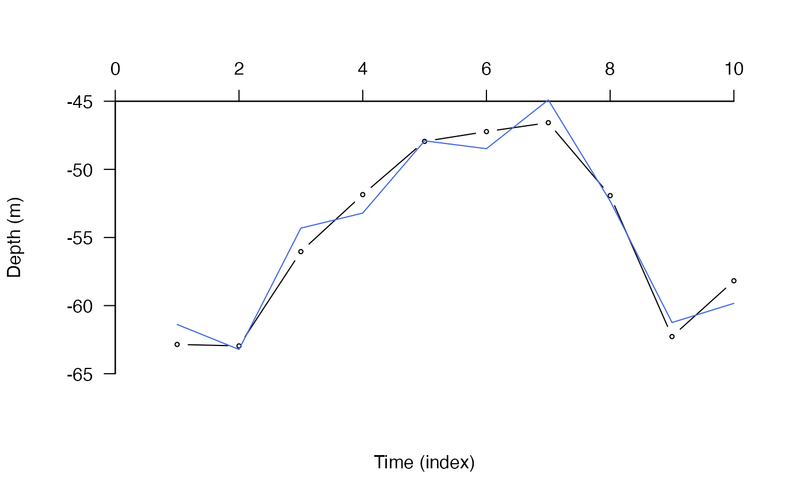

This function implements a simulation-based particle filtering process for the reconstruction of animal movement paths. This extends the AC, DC and ACDC algorithms in flapper (ac, dc and acdc), which determine the possible locations of an individual through time based on acoustic detections and/or depth contours, by the incorporation of a movement model that connects a subset of the animal's possible locations between time steps into movement paths.
To implement this approach, a list of raster layers that record the possible locations of the individual at each time step (or a list pointers to these layers) needs to be supplied. A starting location (origin) can be supplied to constrain the initial set of sampled locations of the individual. At each time step, n possible locations (`particles') are sampled (with replacement) from the set of possible locations. For each (1:n) particle, a movement model is used to simulate where the individual could have moved to at the next time step, if it was in any of those locations. In the current framework, the probability of movement into surrounding cells depends on the distance to those cells, which can be represented as using Euclidean or least-cost distances depending on the distance method (calc_distance), and user-defined movement models (calc_movement_pr_from_origin and calc_movement_pr) that link distances to movement probabilities at each time step.
At each subsequent time step, this process repeats, with n possible locations of the individual sampled according to the probability that the individual could have been in that cell, given a previously sampled location and the set of possible locations at the next time step. The result is a set of locations at each time step that are consistent with the data and model parameters. Sampled locations can be connected into movement paths via pf_simplify.
pf( record, data = NULL, origin = NULL, calc_distance = c("euclid", "lcp"), calc_distance_euclid_fast = TRUE, bathy = NULL, calc_distance_graph = NULL, calc_movement_pr = pf_setup_movement_pr, calc_movement_pr_from_origin = calc_movement_pr, mobility = NULL, mobility_from_origin = mobility, n = 10L, resample = NULL, update_history = NULL, update_history_from_time_step = 1L, write_history = NULL, cl = NULL, use_all_cores = FALSE, seed = NULL, verbose = TRUE, con = "", optimisers = pf_setup_optimisers() )
Arguments
| record | A list of |
|---|---|
| data | (optional) A dataframe, with one row for each time step (i.e. element in |
| origin | (optional) A matrix that defines the coordinates (x, y) of the individual's initial location. Coordinates should follow the restrictions for |
| calc_distance | A character that defines the method used to calculate distances between a point (i.e., a sampled location) and the surrounding cells. This drives the probability of movement into those cells via a movement model (see |
| calc_distance_euclid_fast | If |
| bathy | (optional) If |
| calc_distance_graph | (optional) If |
| calc_movement_pr | The movement model. This must be a function that calculates the probability of movement between two locations in the time between sequential |
| calc_movement_pr_from_origin | (optional) If an |
| mobility | (optional) A number that defines the maximum horizontal distance (m) that the individual could travel in the time period between sequential |
| mobility_from_origin | (optional) As above for |
| n | An integer that defines the number of particles (i.e., the number of locations sampled at each time step from the set of possible locations at that time step). |
| resample | (optional) An integer that defines the minimum number of unique cells that should be sampled, given the movement model ( |
| update_history | (optional) A list that defines particle histories from an earlier implementation of |
| update_history_from_time_step | If |
| write_history | (optional) A named list, passed to |
| cl, use_all_cores | (optional) Parallelisation options. These can be implemented for the approaches that consider particles iteratively (i.e., |
| seed | (optional) An integer to define the seed for reproducible simulations (see |
| verbose | A logical variable that defines whether or not to print messages to the console or to file to relay function progress. If |
| con | If |
| optimisers | A named list of optimisation controls from |
Value
The function returns a pf_archive-class object. This is a named list that includes the parameters used to generate function outputs (`args') and the particles sampled at each time step (`history'). The latter can be assembled into a dataframe of movement paths via pf_simplify.
Details
Background
This function implements a widely applicable particle simulation and filtering based approach to refine maps of possible locations of an individual through time via the incorporation of a movement model that facilitates the reconstruction of movement paths. Within flapper, the acoustic-centroid (AC), depth-contour (DC) and acoustic-centroid depth-contour (ACDC) algorithms, which define the possible locations of an individual through time based on acoustic centroids and/or depth contours, can be passed through a this process, resulting in the DCPF, ACPF and ACDCPF algorithms.
ACPF. The ACPF algorithm combines the AC algorithm with particle filtering. This is designed to simulate possible movement paths in passive acoustic telemetry arrays. This algorithm is widely applicable.
DCPF. The DCPF algorithm combines the DC algorithm with particle filtering. This is designed to simulate possible movement paths of a tagged animal over the seabed, given a regular sequence of depth observations (
archival), the bathymetry (bathy) over which movement occurred and a movement model (calc_movement_pr) that specifies the probability of movement from a given location to any other, given the distance between them (and any other pre-defined time-dependent parameters inarchival). The function was motivated by small scale applications concerning the reconstruction of possible movement paths of flapper skate (Dipturus intermedius) tagged with archival tags, following capture and release in a given location, for short-periods of time post-release.ACDCPF. The ACDCPF algorithm combines the ACDC algorithm with particle filtering. For tagged animals with acoustic and archival data, this algorithm is designed to reconstruct fine-scale movement patterns across an area.
Methods
At the first time step, n starting points (`particles') are selected from the set of possible locations of the individual. If an origin is specified, this selection can be biased towards cells near the origin by the movement model. From each starting position, the Euclidean or shortest distances to cells in which the individual could have been located at the next time step are calculated and passed to a movement model that assigns movement probabilities to each cell. Since movement probabilities are likely to be behaviourally dependent, the movement model can depend on time step-specific information specified in data. However, currently, the model cannot depend on sampled locations; therefore, at least under some conditions, the movement model will need to reflect the maximum distance that an individual could travel within the time period between depth observations, accounting for the possible effects of water currents and any other influences on swimming speed. Movement probabilities are combined with the 'intrinsic' probability associated with each location (as defined in the record), giving a holistic measure of the probability of movement into each cell. From the set of cells in which the individual could have been located with a probability of more than zero, n particles are sampled, with replacement and according to their probability, and taken as possible starting positions at the next time step. This process repeats until the end of the time series. Since locations are sampled from the set of possible locations at each time step, any restrictions on the individual's movement (e.g., from acoustic detections) incorporated within record are directly incorporated. The result is a set of simulated particles that represent possible locations of the individual at each time step, accounting for movement restrictions. This can be assembled into a set of movement paths over a surface that is consistent with the data and the model parameters via pf_simplify. While the number of particles is predetermined by n, more than n possible pathways may be defined by all of the combinations of sequential particle movements.
Convergence
Algorithm convergence is not guaranteed. There are three main circumstances in which the algorithm may fail to return any paths that span the start to the end of the depth time series:
Chance. All
npaths may be `dead ends'. This possibility can be mitigated by increasingn.Movement model. The movement model may be too limiting. This possibility can be mitigated by ensuring that the movement model realistically represents the probability that an individual can transition between cells given the distance between them. This may be guided by data on the study species or similar species. The movement model may need to account for the effect of water currents, which may increase maximum `swimming' speeds in some directions. (Unfortunately, spatially variable swimming speeds are not currently implemented.) If maximum swimming speeds are uncertain, implementing the algorithm over longer time series (e.g., every \(2^{nd}\)
record), with a suitably relaxed movement model, may facilitate convergence if maximum speeds are unlikely to be maintained for long periods.Other assumptions. The particle filtering process is based on pre-defined surfaces of the possible locations of the individual at each time step and the assumptions in the computation of these surfaces may be violated. For example, in the DC and ACDC algorithms. the depth error may be too restrictive, given the accuracy of the depth observations, the bathymetry data and the tidal height across an area.
In these scenarios, the function returns a message that it is about to fail and the results from the start of the algorithm until the current time step, before stopping.
Computational considerations
This algorithm is computationally intensive. It is advisable that it is run initially with a small time series in a small area and a small number of particles. For larger datasets, there are some tricks that can improve computation time.
Temporal resolution. Reduce the temporal resolution of the
recordtime series so that there are fewer time steps.Bathymetric resolution. Reduce the resolution of
records. For the DC or ACDC algorithms, this will require re-implementingdcoracdcwith a lower resolution surface and propagating the additional error induced by this process viacalc_depth_error(e.g., seeprocess_surface) and then using the recomputedrecords in this function.Mobility limits. Check whether or not setting mobility limits (
mobility,mobility_from_origin) improves speed.Distance calculations. This step is particularly slow because the distance from each location to many or all surrounding locations are calculated. To speed up this step, implement
calc_distance = "euclid"withcalc_distance_euclid_fast = TRUE. If necessary, interpolate least-cost paths after algorithm completion withinpf_simplifyorlcp_interp. In the future, a Markov chain Monte Carlo style approach may be implemented in which distances (and probabilities) for randomly selected `proposal' cells are calculated, with those cells then rejected or retained, rather than calculating distances to many or all surrounding cells, but this is unlikely to be faster in many settings.Parallelisation. If the fast Euclidean distances method is not used, test alternative options for parallelisation. For the
clargument, specifying an integer on non-Windows platforms may be faster than a cluster frommakeCluster(seepblapply). Parallelisation may be slower in some circumstances.
See also
This routine builds on the AC (ac), (dc) and (acdc) algorithms. For the movement model, Euclidean distances are obtained from distanceFromPoints or shortest distances are obtained from lcp_from_point (via lcp_costs and lcp_graph_surface, unless calc_distance_graph is supplied). The default movement model applied to these distances is pf_setup_movement_pr. get_mvt_resting provides a means to assign resting/non-resting behaviour to time steps (in data) for behaviourally dependent movement models. Particle histories can be visualised with pf_plot_history and joined into paths via pf_simplify. For processed paths, shortest distances/paths between sequential locations can be interpolated via lcp_interp, which is a wrapper for the lcp_over_surface routine. This can be useful for checking whether the faster Euclidean distances method is acceptable and, if so, for post-hoc adjustments of movement probabilities based on shortest distances (see lcp_interp). Paths can be visualised with pf_plot_1d, pf_plot_2d and pf_plot_3d. The log-likelihood of the paths, given the movement model, can be calculated via pf_loglik.
Author
Edward Lavender
Examples
#### Summary # In these examples, we consider an example depth time series, which we generate. # We use the DC algorithm to reconstruct the possible locations of the individual through time. # We then use particle filtering (the DCPF algorithm in this case) to refine maps of the # ... individuals possible location via the incorporation of a movement model. The # ... same principles apply to other algorithms e.g., AC and ACDC. #### Step (1): Generate some example movement time series over a surface ## Sample species # In this example, we consider flapper skate (Dipturus intermedius) # ... off the west coast of Scotland. ## Define a starting location (optional) in UTM coordinates xy <- matrix(c(708886.3, 6254404), ncol = 2) ## Define 'observed' depth time series using absolute values # Imagine these are observations made every two minutes depth <- c(163.06, 159.71, 153.49, 147.04, 139.86, 127.19, 114.75, 99.44, 87.01, 78.16, 70.03, 60.23, 49.96, 35.39, 27.75, 20.13, 12.73, 11.32) depth <- data.frame(depth = depth) ## Define surface over which movement occurred # We will use the example dat_gebco bathymetry dataset # This is relatively coarse in resolution, so we need to re-sample # ... the raster to generate a finer-resolution raster such that # ... our animal can transition between cells # ... in the duration between depth observations. For speed, # ... we will focus on a small area around the origin. We could # ... also process the raster in other ways (e.g., mask any areas of land) # ... to improve efficiency. surface <- dat_gebco boundaries <- raster::extent(707884.6, 709884.6, 6253404, 6255404) blank <- raster::raster(boundaries, res = c(5, 5)) surface <- raster::resample(surface, blank) ## Define depth error function # Because the bathymetry data is very coarse, and the bathymetry is # ... very complex in this region of Scotland, we have to # ... force a high depth error to be high in this example. # The calc_depth_error() function can depend on depth, but in this example # ... we assume the depth error is independent of depth. cde <- function(...) matrix(c(-30, 30), nrow = 2) ## Define movement model # The default movement model is suitable, with skate moving typically # ... less than 200 m in a two-minute period. # You could use a separate movement model (and mobility restriction) for the origin # ... if necessary, but for brevity we don't implement that here. ## Visualise movement surface, with starting location overlaid prettyGraphics::pretty_map(add_rasters = list(x = surface), add_points = list(x = xy), verbose = FALSE)#>#>#### Step (2): Use the DC algorithm to get individual's the possible locations dc_out <- dc(archival = depth, bathy = surface, calc_depth_error = cde, save_record_spatial = NULL)#> flapper::dc() called (@ 2021-12-02 11:56:40)... #> ... Setting up function...#>#> ... Implementing calc_depth_error()... #> ... Plotting movement time series (for each chunk)...#> ... Implementing algorithm over time steps... #> ... flapper::dc() call completed (@ 2021-12-02 11:56:41) after ~0.01 minutes.# Extract time-specific maps # ... Either directly for single chunk implementations of dc() record <- dc_out$archive$record record <- lapply(record, function(r) r$spatial[[1]]$map_timestep) # ... Or indirectly via acdc_simplify() in general dc_out_summary <- acdc_simplify(dc_out, type = "dc")#>record <- lapply(dc_out_summary$record, function(r) r$spatial[[1]]$map_timestep) # Plot maps lapply(record, function(r) raster::plot(r))#> [[1]] #> NULL #> #> [[2]] #> NULL #> #> [[3]] #> NULL #> #> [[4]] #> NULL #> #> [[5]] #> NULL #> #> [[6]] #> NULL #> #> [[7]] #> NULL #> #> [[8]] #> NULL #> #> [[9]] #> NULL #> #> [[10]] #> NULL #> #> [[11]] #> NULL #> #> [[12]] #> NULL #> #> [[13]] #> NULL #> #> [[14]] #> NULL #> #> [[15]] #> NULL #> #> [[16]] #> NULL #> #> [[17]] #> NULL #> #> [[18]] #> NULL #>#### Example (1): Implement algorithm using default options out_1 <- pf(record = record, origin = xy, calc_distance = "euclid", calc_movement_pr = pf_setup_movement_pr, n = 10L, seed = 1)#> flapper::pf() called (@ 2021-12-02 11:56:42)... #> ... Setting up function... #> ... Determining the set of possible starting locations (t = 1)... #> ... Implementing algorithm iteratively over time steps... #> ... ... Time = 1... #> ... ... ... Selecting candidate starting positions for the current time step... #> ... ... ... For each particle, getting the possible positions for the next time step... #> ... ... Time = 2... #> ... ... ... Selecting candidate starting positions for the current time step... #> ... ... ... For each particle, getting the possible positions for the next time step... #> ... ... Time = 3... #> ... ... ... Selecting candidate starting positions for the current time step... #> ... ... ... For each particle, getting the possible positions for the next time step... #> ... ... Time = 4... #> ... ... ... Selecting candidate starting positions for the current time step... #> ... ... ... For each particle, getting the possible positions for the next time step... #> ... ... Time = 5... #> ... ... ... Selecting candidate starting positions for the current time step... #> ... ... ... For each particle, getting the possible positions for the next time step... #> ... ... Time = 6... #> ... ... ... Selecting candidate starting positions for the current time step... #> ... ... ... For each particle, getting the possible positions for the next time step... #> ... ... Time = 7... #> ... ... ... Selecting candidate starting positions for the current time step... #> ... ... ... For each particle, getting the possible positions for the next time step... #> ... ... Time = 8... #> ... ... ... Selecting candidate starting positions for the current time step... #> ... ... ... For each particle, getting the possible positions for the next time step... #> ... ... Time = 9... #> ... ... ... Selecting candidate starting positions for the current time step... #> ... ... ... For each particle, getting the possible positions for the next time step... #> ... ... Time = 10... #> ... ... ... Selecting candidate starting positions for the current time step... #> ... ... ... For each particle, getting the possible positions for the next time step... #> ... ... Time = 11... #> ... ... ... Selecting candidate starting positions for the current time step... #> ... ... ... For each particle, getting the possible positions for the next time step... #> ... ... Time = 12... #> ... ... ... Selecting candidate starting positions for the current time step... #> ... ... ... For each particle, getting the possible positions for the next time step... #> ... ... Time = 13... #> ... ... ... Selecting candidate starting positions for the current time step... #> ... ... ... For each particle, getting the possible positions for the next time step... #> ... ... Time = 14... #> ... ... ... Selecting candidate starting positions for the current time step... #> ... ... ... For each particle, getting the possible positions for the next time step... #> ... ... Time = 15... #> ... ... ... Selecting candidate starting positions for the current time step... #> ... ... ... For each particle, getting the possible positions for the next time step... #> ... ... Time = 16... #> ... ... ... Selecting candidate starting positions for the current time step... #> ... ... ... For each particle, getting the possible positions for the next time step... #> ... ... Time = 17... #> ... ... ... Selecting candidate starting positions for the current time step... #> ... ... ... For each particle, getting the possible positions for the next time step... #> ... ... Time = 18... #> ... ... ... Selecting candidate starting positions for the current time step... #> ... flapper::pf() call completed (@ 2021-12-02 11:56:43) after ~0.01 minutes.#> [1] "list" "pf_archive"#> List of 3 #> $ history:List of 18 #> ..$ :'data.frame': 10 obs. of 3 variables: #> .. ..$ id_current: int [1:10] 85008 89770 79789 72242 84967 68595 89381 87774 68586 76260 #> .. ..$ pr_current: num [1:10] 0.999 0.55 0.999 0.197 0.728 ... #> .. ..$ timestep : int [1:10] 1 1 1 1 1 1 1 1 1 1 #> ..$ :'data.frame': 10 obs. of 5 variables: #> .. ..$ id_previous: logi [1:10] NA NA NA NA NA NA ... #> .. ..$ pr_previous: logi [1:10] NA NA NA NA NA NA ... #> .. ..$ id_current : int [1:10] 61358 78160 90650 62640 65778 82671 61046 88695 84150 92154 #> .. ..$ pr_current : num [1:10] 0.843 0.996 0.659 0.982 0.999 ... #> .. ..$ timestep : int [1:10] 2 2 2 2 2 2 2 2 2 2 #> ..$ :'data.frame': 10 obs. of 5 variables: #> .. ..$ id_previous: logi [1:10] NA NA NA NA NA NA ... #> .. ..$ pr_previous: logi [1:10] NA NA NA NA NA NA ... #> .. ..$ id_current : int [1:10] 107362 81908 63052 52526 85503 93360 92689 79432 76596 76242 #> .. ..$ pr_current : num [1:10] 0.572 0.991 1 0.572 0.999 ... #> .. ..$ timestep : int [1:10] 3 3 3 3 3 3 3 3 3 3 #> ..$ :'data.frame': 10 obs. of 5 variables: #> .. ..$ id_previous: logi [1:10] NA NA NA NA NA NA ... #> .. ..$ pr_previous: logi [1:10] NA NA NA NA NA NA ... #> .. ..$ id_current : int [1:10] 94706 107383 57704 86215 97366 63815 107090 102150 92322 65416 #> .. ..$ pr_current : num [1:10] 0.996 0.991 0.974 0.982 0.999 ... #> .. ..$ timestep : int [1:10] 4 4 4 4 4 4 4 4 4 4 #> ..$ :'data.frame': 10 obs. of 5 variables: #> .. ..$ id_previous: logi [1:10] NA NA NA NA NA NA ... #> .. ..$ pr_previous: logi [1:10] NA NA NA NA NA NA ... #> .. ..$ id_current : int [1:10] 83760 55037 104514 63417 95914 86181 56483 96982 66640 83490 #> .. ..$ pr_current : num [1:10] 0.797 0.902 0.706 1 1 ... #> .. ..$ timestep : int [1:10] 5 5 5 5 5 5 5 5 5 5 #> ..$ :'data.frame': 10 obs. of 5 variables: #> .. ..$ id_previous: logi [1:10] NA NA NA NA NA NA ... #> .. ..$ pr_previous: logi [1:10] NA NA NA NA NA NA ... #> .. ..$ id_current : int [1:10] 61722 67771 95489 52083 52177 99942 105750 54495 76160 51266 #> .. ..$ pr_current : num [1:10] 0.4311 0.4082 0.9769 0.9993 0.0992 ... #> .. ..$ timestep : int [1:10] 6 6 6 6 6 6 6 6 6 6 #> ..$ :'data.frame': 10 obs. of 5 variables: #> .. ..$ id_previous: logi [1:10] NA NA NA NA NA NA ... #> .. ..$ pr_previous: logi [1:10] NA NA NA NA NA NA ... #> .. ..$ id_current : int [1:10] 62980 59666 111088 54205 103509 93966 89102 98313 83096 79759 #> .. ..$ pr_current : num [1:10] 0.998 0.991 0.561 0.947 0.949 ... #> .. ..$ timestep : int [1:10] 7 7 7 7 7 7 7 7 7 7 #> ..$ :'data.frame': 10 obs. of 5 variables: #> .. ..$ id_previous: logi [1:10] NA NA NA NA NA NA ... #> .. ..$ pr_previous: logi [1:10] NA NA NA NA NA NA ... #> .. ..$ id_current : int [1:10] 112280 81554 112668 96694 102346 85556 120296 118661 95178 87529 #> .. ..$ pr_current : num [1:10] 1 0.844 0.993 0.994 0.94 ... #> .. ..$ timestep : int [1:10] 8 8 8 8 8 8 8 8 8 8 #> ..$ :'data.frame': 10 obs. of 5 variables: #> .. ..$ id_previous: logi [1:10] NA NA NA NA NA NA ... #> .. ..$ pr_previous: logi [1:10] NA NA NA NA NA NA ... #> .. ..$ id_current : int [1:10] 115579 131867 80771 91574 122316 106380 120343 121102 90382 112318 #> .. ..$ pr_current : num [1:10] 0.159 0.834 0.997 0.999 0.992 ... #> .. ..$ timestep : int [1:10] 9 9 9 9 9 9 9 9 9 9 #> ..$ :'data.frame': 10 obs. of 5 variables: #> .. ..$ id_previous: logi [1:10] NA NA NA NA NA NA ... #> .. ..$ pr_previous: logi [1:10] NA NA NA NA NA NA ... #> .. ..$ id_current : int [1:10] 136267 105599 89551 115188 115499 126698 120292 115511 101578 129960 #> .. ..$ pr_current : num [1:10] 0.999 0.995 0.984 1 0.998 ... #> .. ..$ timestep : int [1:10] 10 10 10 10 10 10 10 10 10 10 #> ..$ :'data.frame': 10 obs. of 5 variables: #> .. ..$ id_previous: logi [1:10] NA NA NA NA NA NA ... #> .. ..$ pr_previous: logi [1:10] NA NA NA NA NA NA ... #> .. ..$ id_current : int [1:10] 136733 135885 138683 106798 126792 113134 120395 128363 109555 141530 #> .. ..$ pr_current : num [1:10] 0.883 0.996 0.997 1 0.936 ... #> .. ..$ timestep : int [1:10] 11 11 11 11 11 11 11 11 11 11 #> ..$ :'data.frame': 10 obs. of 5 variables: #> .. ..$ id_previous: logi [1:10] NA NA NA NA NA NA ... #> .. ..$ pr_previous: logi [1:10] NA NA NA NA NA NA ... #> .. ..$ id_current : int [1:10] 101979 155507 129198 115969 155872 115167 138692 151495 141498 123956 #> .. ..$ pr_current : num [1:10] 0.988 0.385 1 0.991 0.25 ... #> .. ..$ timestep : int [1:10] 12 12 12 12 12 12 12 12 12 12 #> ..$ :'data.frame': 10 obs. of 5 variables: #> .. ..$ id_previous: logi [1:10] NA NA NA NA NA NA ... #> .. ..$ pr_previous: logi [1:10] NA NA NA NA NA NA ... #> .. ..$ id_current : int [1:10] 135570 130367 157120 91995 124393 117563 123532 128321 100382 152705 #> .. ..$ pr_current : num [1:10] 0.875 0.994 0.999 0.93 0.999 ... #> .. ..$ timestep : int [1:10] 13 13 13 13 13 13 13 13 13 13 #> ..$ :'data.frame': 10 obs. of 5 variables: #> .. ..$ id_previous: logi [1:10] NA NA NA NA NA NA ... #> .. ..$ pr_previous: logi [1:10] NA NA NA NA NA NA ... #> .. ..$ id_current : int [1:10] 139928 158303 144379 131579 137536 137566 133185 96000 116783 145566 #> .. ..$ pr_current : num [1:10] 0.927 0.998 0.983 0.999 0.958 ... #> .. ..$ timestep : int [1:10] 14 14 14 14 14 14 14 14 14 14 #> ..$ :'data.frame': 10 obs. of 5 variables: #> .. ..$ id_previous: logi [1:10] NA NA NA NA NA NA ... #> .. ..$ pr_previous: logi [1:10] NA NA NA NA NA NA ... #> .. ..$ id_current : int [1:10] 154367 153569 145941 139978 152765 109191 119996 142754 152785 157537 #> .. ..$ pr_current : num [1:10] 0.989 0.993 0.994 0.999 0.996 ... #> .. ..$ timestep : int [1:10] 15 15 15 15 15 15 15 15 15 15 #> ..$ :'data.frame': 10 obs. of 5 variables: #> .. ..$ id_previous: logi [1:10] NA NA NA NA NA NA ... #> .. ..$ pr_previous: logi [1:10] NA NA NA NA NA NA ... #> .. ..$ id_current : int [1:10] 145592 159998 123987 151191 131196 119199 118393 131183 117599 155592 #> .. ..$ pr_current : num [1:10] 0.994 0.988 0.999 1 0.953 ... #> .. ..$ timestep : int [1:10] 16 16 16 16 16 16 16 16 16 16 #> ..$ :'data.frame': 10 obs. of 5 variables: #> .. ..$ id_previous: logi [1:10] NA NA NA NA NA NA ... #> .. ..$ pr_previous: logi [1:10] NA NA NA NA NA NA ... #> .. ..$ id_current : int [1:10] 157578 123998 141599 123998 138794 125999 143993 148796 152387 136391 #> .. ..$ pr_current : num [1:10] 0.998 0.999 0.999 0.999 0.997 ... #> .. ..$ timestep : int [1:10] 17 17 17 17 17 17 17 17 17 17 #> ..$ :'data.frame': 10 obs. of 5 variables: #> .. ..$ id_previous: logi [1:10] NA NA NA NA NA NA ... #> .. ..$ pr_previous: logi [1:10] NA NA NA NA NA NA ... #> .. ..$ id_current : int [1:10] 157200 147196 136400 156793 149190 147993 153996 129599 146399 156795 #> .. ..$ pr_current : num [1:10] 0.996 1 1 0.999 1 ... #> .. ..$ timestep : int [1:10] 18 18 18 18 18 18 18 18 18 18 #> $ method : chr "pf" #> $ args :List of 21 #> ..$ record :List of 18 #> .. ..$ :Formal class 'RasterLayer' [package "raster"] with 12 slots #> .. .. .. ..@ file :Formal class '.RasterFile' [package "raster"] with 13 slots #> .. .. .. .. .. ..@ name : chr "" #> .. .. .. .. .. ..@ datanotation: chr "LOG1S" #> .. .. .. .. .. ..@ byteorder : chr "little" #> .. .. .. .. .. ..@ nodatavalue : num -128 #> .. .. .. .. .. ..@ NAchanged : logi FALSE #> .. .. .. .. .. ..@ nbands : int 1 #> .. .. .. .. .. ..@ bandorder : chr "BIL" #> .. .. .. .. .. ..@ offset : int 0 #> .. .. .. .. .. ..@ toptobottom : logi TRUE #> .. .. .. .. .. ..@ blockrows : int 0 #> .. .. .. .. .. ..@ blockcols : int 0 #> .. .. .. .. .. ..@ driver : chr "" #> .. .. .. .. .. ..@ open : logi FALSE #> .. .. .. ..@ data :Formal class '.SingleLayerData' [package "raster"] with 13 slots #> .. .. .. .. .. ..@ values : logi [1:160000] FALSE TRUE TRUE TRUE TRUE TRUE ... #> .. .. .. .. .. ..@ offset : num 0 #> .. .. .. .. .. ..@ gain : num 1 #> .. .. .. .. .. ..@ inmemory : logi TRUE #> .. .. .. .. .. ..@ fromdisk : logi FALSE #> .. .. .. .. .. ..@ isfactor : logi FALSE #> .. .. .. .. .. ..@ attributes: list() #> .. .. .. .. .. ..@ haveminmax: logi TRUE #> .. .. .. .. .. ..@ min : int 0 #> .. .. .. .. .. ..@ max : int 1 #> .. .. .. .. .. ..@ band : int 1 #> .. .. .. .. .. ..@ unit : chr "" #> .. .. .. .. .. ..@ names : chr "" #> .. .. .. ..@ legend :Formal class '.RasterLegend' [package "raster"] with 5 slots #> .. .. .. .. .. ..@ type : chr(0) #> .. .. .. .. .. ..@ values : logi(0) #> .. .. .. .. .. ..@ color : logi(0) #> .. .. .. .. .. ..@ names : logi(0) #> .. .. .. .. .. ..@ colortable: logi(0) #> .. .. .. ..@ title : chr(0) #> .. .. .. ..@ extent :Formal class 'Extent' [package "raster"] with 4 slots #> .. .. .. .. .. ..@ xmin: num 707885 #> .. .. .. .. .. ..@ xmax: num 709885 #> .. .. .. .. .. ..@ ymin: num 6253404 #> .. .. .. .. .. ..@ ymax: num 6255404 #> .. .. .. ..@ rotated : logi FALSE #> .. .. .. ..@ rotation:Formal class '.Rotation' [package "raster"] with 2 slots #> .. .. .. .. .. ..@ geotrans: num(0) #> .. .. .. .. .. ..@ transfun:function () #> .. .. .. ..@ ncols : int 400 #> .. .. .. ..@ nrows : int 400 #> .. .. .. ..@ crs :Formal class 'CRS' [package "sp"] with 1 slot #> .. .. .. .. .. ..@ projargs: chr NA #> .. .. .. ..@ history : list() #> .. .. .. ..@ z : list() #> .. ..$ :Formal class 'RasterLayer' [package "raster"] with 12 slots #> .. .. .. ..@ file :Formal class '.RasterFile' [package "raster"] with 13 slots #> .. .. .. .. .. ..@ name : chr "" #> .. .. .. .. .. ..@ datanotation: chr "LOG1S" #> .. .. .. .. .. ..@ byteorder : chr "little" #> .. .. .. .. .. ..@ nodatavalue : num -128 #> .. .. .. .. .. ..@ NAchanged : logi FALSE #> .. .. .. .. .. ..@ nbands : int 1 #> .. .. .. .. .. ..@ bandorder : chr "BIL" #> .. .. .. .. .. ..@ offset : int 0 #> .. .. .. .. .. ..@ toptobottom : logi TRUE #> .. .. .. .. .. ..@ blockrows : int 0 #> .. .. .. .. .. ..@ blockcols : int 0 #> .. .. .. .. .. ..@ driver : chr "" #> .. .. .. .. .. ..@ open : logi FALSE #> .. .. .. ..@ data :Formal class '.SingleLayerData' [package "raster"] with 13 slots #> .. .. .. .. .. ..@ values : logi [1:160000] FALSE FALSE FALSE FALSE FALSE FALSE ... #> .. .. .. .. .. ..@ offset : num 0 #> .. .. .. .. .. ..@ gain : num 1 #> .. .. .. .. .. ..@ inmemory : logi TRUE #> .. .. .. .. .. ..@ fromdisk : logi FALSE #> .. .. .. .. .. ..@ isfactor : logi FALSE #> .. .. .. .. .. ..@ attributes: list() #> .. .. .. .. .. ..@ haveminmax: logi TRUE #> .. .. .. .. .. ..@ min : int 0 #> .. .. .. .. .. ..@ max : int 1 #> .. .. .. .. .. ..@ band : int 1 #> .. .. .. .. .. ..@ unit : chr "" #> .. .. .. .. .. ..@ names : chr "" #> .. .. .. ..@ legend :Formal class '.RasterLegend' [package "raster"] with 5 slots #> .. .. .. .. .. ..@ type : chr(0) #> .. .. .. .. .. ..@ values : logi(0) #> .. .. .. .. .. ..@ color : logi(0) #> .. .. .. .. .. ..@ names : logi(0) #> .. .. .. .. .. ..@ colortable: logi(0) #> .. .. .. ..@ title : chr(0) #> .. .. .. ..@ extent :Formal class 'Extent' [package "raster"] with 4 slots #> .. .. .. .. .. ..@ xmin: num 707885 #> .. .. .. .. .. ..@ xmax: num 709885 #> .. .. .. .. .. ..@ ymin: num 6253404 #> .. .. .. .. .. ..@ ymax: num 6255404 #> .. .. .. ..@ rotated : logi FALSE #> .. .. .. ..@ rotation:Formal class '.Rotation' [package "raster"] with 2 slots #> .. .. .. .. .. ..@ geotrans: num(0) #> .. .. .. .. .. ..@ transfun:function () #> .. .. .. ..@ ncols : int 400 #> .. .. .. ..@ nrows : int 400 #> .. .. .. ..@ crs :Formal class 'CRS' [package "sp"] with 1 slot #> .. .. .. .. .. ..@ projargs: chr NA #> .. .. .. ..@ history : list() #> .. .. .. ..@ z : list() #> .. ..$ :Formal class 'RasterLayer' [package "raster"] with 12 slots #> .. .. .. ..@ file :Formal class '.RasterFile' [package "raster"] with 13 slots #> .. .. .. .. .. ..@ name : chr "" #> .. .. .. .. .. ..@ datanotation: chr "LOG1S" #> .. .. .. .. .. ..@ byteorder : chr "little" #> .. .. .. .. .. ..@ nodatavalue : num -128 #> .. .. .. .. .. ..@ NAchanged : logi FALSE #> .. .. .. .. .. ..@ nbands : int 1 #> .. .. .. .. .. ..@ bandorder : chr "BIL" #> .. .. .. .. .. ..@ offset : int 0 #> .. .. .. .. .. ..@ toptobottom : logi TRUE #> .. .. .. .. .. ..@ blockrows : int 0 #> .. .. .. .. .. ..@ blockcols : int 0 #> .. .. .. .. .. ..@ driver : chr "" #> .. .. .. .. .. ..@ open : logi FALSE #> .. .. .. ..@ data :Formal class '.SingleLayerData' [package "raster"] with 13 slots #> .. .. .. .. .. ..@ values : logi [1:160000] FALSE FALSE FALSE FALSE FALSE FALSE ... #> .. .. .. .. .. ..@ offset : num 0 #> .. .. .. .. .. ..@ gain : num 1 #> .. .. .. .. .. ..@ inmemory : logi TRUE #> .. .. .. .. .. ..@ fromdisk : logi FALSE #> .. .. .. .. .. ..@ isfactor : logi FALSE #> .. .. .. .. .. ..@ attributes: list() #> .. .. .. .. .. ..@ haveminmax: logi TRUE #> .. .. .. .. .. ..@ min : int 0 #> .. .. .. .. .. ..@ max : int 1 #> .. .. .. .. .. ..@ band : int 1 #> .. .. .. .. .. ..@ unit : chr "" #> .. .. .. .. .. ..@ names : chr "" #> .. .. .. ..@ legend :Formal class '.RasterLegend' [package "raster"] with 5 slots #> .. .. .. .. .. ..@ type : chr(0) #> .. .. .. .. .. ..@ values : logi(0) #> .. .. .. .. .. ..@ color : logi(0) #> .. .. .. .. .. ..@ names : logi(0) #> .. .. .. .. .. ..@ colortable: logi(0) #> .. .. .. ..@ title : chr(0) #> .. .. .. ..@ extent :Formal class 'Extent' [package "raster"] with 4 slots #> .. .. .. .. .. ..@ xmin: num 707885 #> .. .. .. .. .. ..@ xmax: num 709885 #> .. .. .. .. .. ..@ ymin: num 6253404 #> .. .. .. .. .. ..@ ymax: num 6255404 #> .. .. .. ..@ rotated : logi FALSE #> .. .. .. ..@ rotation:Formal class '.Rotation' [package "raster"] with 2 slots #> .. .. .. .. .. ..@ geotrans: num(0) #> .. .. .. .. .. ..@ transfun:function () #> .. .. .. ..@ ncols : int 400 #> .. .. .. ..@ nrows : int 400 #> .. .. .. ..@ crs :Formal class 'CRS' [package "sp"] with 1 slot #> .. .. .. .. .. ..@ projargs: chr NA #> .. .. .. ..@ history : list() #> .. .. .. ..@ z : list() #> .. ..$ :Formal class 'RasterLayer' [package "raster"] with 12 slots #> .. .. .. ..@ file :Formal class '.RasterFile' [package "raster"] with 13 slots #> .. .. .. .. .. ..@ name : chr "" #> .. .. .. .. .. ..@ datanotation: chr "LOG1S" #> .. .. .. .. .. ..@ byteorder : chr "little" #> .. .. .. .. .. ..@ nodatavalue : num -128 #> .. .. .. .. .. ..@ NAchanged : logi FALSE #> .. .. .. .. .. ..@ nbands : int 1 #> .. .. .. .. .. ..@ bandorder : chr "BIL" #> .. .. .. .. .. ..@ offset : int 0 #> .. .. .. .. .. ..@ toptobottom : logi TRUE #> .. .. .. .. .. ..@ blockrows : int 0 #> .. .. .. .. .. ..@ blockcols : int 0 #> .. .. .. .. .. ..@ driver : chr "" #> .. .. .. .. .. ..@ open : logi FALSE #> .. .. .. ..@ data :Formal class '.SingleLayerData' [package "raster"] with 13 slots #> .. .. .. .. .. ..@ values : logi [1:160000] FALSE FALSE FALSE FALSE FALSE FALSE ... #> .. .. .. .. .. ..@ offset : num 0 #> .. .. .. .. .. ..@ gain : num 1 #> .. .. .. .. .. ..@ inmemory : logi TRUE #> .. .. .. .. .. ..@ fromdisk : logi FALSE #> .. .. .. .. .. ..@ isfactor : logi FALSE #> .. .. .. .. .. ..@ attributes: list() #> .. .. .. .. .. ..@ haveminmax: logi TRUE #> .. .. .. .. .. ..@ min : int 0 #> .. .. .. .. .. ..@ max : int 1 #> .. .. .. .. .. ..@ band : int 1 #> .. .. .. .. .. ..@ unit : chr "" #> .. .. .. .. .. ..@ names : chr "" #> .. .. .. ..@ legend :Formal class '.RasterLegend' [package "raster"] with 5 slots #> .. .. .. .. .. ..@ type : chr(0) #> .. .. .. .. .. ..@ values : logi(0) #> .. .. .. .. .. ..@ color : logi(0) #> .. .. .. .. .. ..@ names : logi(0) #> .. .. .. .. .. ..@ colortable: logi(0) #> .. .. .. ..@ title : chr(0) #> .. .. .. ..@ extent :Formal class 'Extent' [package "raster"] with 4 slots #> .. .. .. .. .. ..@ xmin: num 707885 #> .. .. .. .. .. ..@ xmax: num 709885 #> .. .. .. .. .. ..@ ymin: num 6253404 #> .. .. .. .. .. ..@ ymax: num 6255404 #> .. .. .. ..@ rotated : logi FALSE #> .. .. .. ..@ rotation:Formal class '.Rotation' [package "raster"] with 2 slots #> .. .. .. .. .. ..@ geotrans: num(0) #> .. .. .. .. .. ..@ transfun:function () #> .. .. .. ..@ ncols : int 400 #> .. .. .. ..@ nrows : int 400 #> .. .. .. ..@ crs :Formal class 'CRS' [package "sp"] with 1 slot #> .. .. .. .. .. ..@ projargs: chr NA #> .. .. .. ..@ history : list() #> .. .. .. ..@ z : list() #> .. ..$ :Formal class 'RasterLayer' [package "raster"] with 12 slots #> .. .. .. ..@ file :Formal class '.RasterFile' [package "raster"] with 13 slots #> .. .. .. .. .. ..@ name : chr "" #> .. .. .. .. .. ..@ datanotation: chr "LOG1S" #> .. .. .. .. .. ..@ byteorder : chr "little" #> .. .. .. .. .. ..@ nodatavalue : num -128 #> .. .. .. .. .. ..@ NAchanged : logi FALSE #> .. .. .. .. .. ..@ nbands : int 1 #> .. .. .. .. .. ..@ bandorder : chr "BIL" #> .. .. .. .. .. ..@ offset : int 0 #> .. .. .. .. .. ..@ toptobottom : logi TRUE #> .. .. .. .. .. ..@ blockrows : int 0 #> .. .. .. .. .. ..@ blockcols : int 0 #> .. .. .. .. .. ..@ driver : chr "" #> .. .. .. .. .. ..@ open : logi FALSE #> .. .. .. ..@ data :Formal class '.SingleLayerData' [package "raster"] with 13 slots #> .. .. .. .. .. ..@ values : logi [1:160000] FALSE FALSE FALSE FALSE FALSE FALSE ... #> .. .. .. .. .. ..@ offset : num 0 #> .. .. .. .. .. ..@ gain : num 1 #> .. .. .. .. .. ..@ inmemory : logi TRUE #> .. .. .. .. .. ..@ fromdisk : logi FALSE #> .. .. .. .. .. ..@ isfactor : logi FALSE #> .. .. .. .. .. ..@ attributes: list() #> .. .. .. .. .. ..@ haveminmax: logi TRUE #> .. .. .. .. .. ..@ min : int 0 #> .. .. .. .. .. ..@ max : int 1 #> .. .. .. .. .. ..@ band : int 1 #> .. .. .. .. .. ..@ unit : chr "" #> .. .. .. .. .. ..@ names : chr "" #> .. .. .. ..@ legend :Formal class '.RasterLegend' [package "raster"] with 5 slots #> .. .. .. .. .. ..@ type : chr(0) #> .. .. .. .. .. ..@ values : logi(0) #> .. .. .. .. .. ..@ color : logi(0) #> .. .. .. .. .. ..@ names : logi(0) #> .. .. .. .. .. ..@ colortable: logi(0) #> .. .. .. ..@ title : chr(0) #> .. .. .. ..@ extent :Formal class 'Extent' [package "raster"] with 4 slots #> .. .. .. .. .. ..@ xmin: num 707885 #> .. .. .. .. .. ..@ xmax: num 709885 #> .. .. .. .. .. ..@ ymin: num 6253404 #> .. .. .. .. .. ..@ ymax: num 6255404 #> .. .. .. ..@ rotated : logi FALSE #> .. .. .. ..@ rotation:Formal class '.Rotation' [package "raster"] with 2 slots #> .. .. .. .. .. ..@ geotrans: num(0) #> .. .. .. .. .. ..@ transfun:function () #> .. .. .. ..@ ncols : int 400 #> .. .. .. ..@ nrows : int 400 #> .. .. .. ..@ crs :Formal class 'CRS' [package "sp"] with 1 slot #> .. .. .. .. .. ..@ projargs: chr NA #> .. .. .. ..@ history : list() #> .. .. .. ..@ z : list() #> .. ..$ :Formal class 'RasterLayer' [package "raster"] with 12 slots #> .. .. .. ..@ file :Formal class '.RasterFile' [package "raster"] with 13 slots #> .. .. .. .. .. ..@ name : chr "" #> .. .. .. .. .. ..@ datanotation: chr "LOG1S" #> .. .. .. .. .. ..@ byteorder : chr "little" #> .. .. .. .. .. ..@ nodatavalue : num -128 #> .. .. .. .. .. ..@ NAchanged : logi FALSE #> .. .. .. .. .. ..@ nbands : int 1 #> .. .. .. .. .. ..@ bandorder : chr "BIL" #> .. .. .. .. .. ..@ offset : int 0 #> .. .. .. .. .. ..@ toptobottom : logi TRUE #> .. .. .. .. .. ..@ blockrows : int 0 #> .. .. .. .. .. ..@ blockcols : int 0 #> .. .. .. .. .. ..@ driver : chr "" #> .. .. .. .. .. ..@ open : logi FALSE #> .. .. .. ..@ data :Formal class '.SingleLayerData' [package "raster"] with 13 slots #> .. .. .. .. .. ..@ values : logi [1:160000] FALSE FALSE FALSE FALSE FALSE FALSE ... #> .. .. .. .. .. ..@ offset : num 0 #> .. .. .. .. .. ..@ gain : num 1 #> .. .. .. .. .. ..@ inmemory : logi TRUE #> .. .. .. .. .. ..@ fromdisk : logi FALSE #> .. .. .. .. .. ..@ isfactor : logi FALSE #> .. .. .. .. .. ..@ attributes: list() #> .. .. .. .. .. ..@ haveminmax: logi TRUE #> .. .. .. .. .. ..@ min : int 0 #> .. .. .. .. .. ..@ max : int 1 #> .. .. .. .. .. ..@ band : int 1 #> .. .. .. .. .. ..@ unit : chr "" #> .. .. .. .. .. ..@ names : chr "" #> .. .. .. ..@ legend :Formal class '.RasterLegend' [package "raster"] with 5 slots #> .. .. .. .. .. ..@ type : chr(0) #> .. .. .. .. .. ..@ values : logi(0) #> .. .. .. .. .. ..@ color : logi(0) #> .. .. .. .. .. ..@ names : logi(0) #> .. .. .. .. .. ..@ colortable: logi(0) #> .. .. .. ..@ title : chr(0) #> .. .. .. ..@ extent :Formal class 'Extent' [package "raster"] with 4 slots #> .. .. .. .. .. ..@ xmin: num 707885 #> .. .. .. .. .. ..@ xmax: num 709885 #> .. .. .. .. .. ..@ ymin: num 6253404 #> .. .. .. .. .. ..@ ymax: num 6255404 #> .. .. .. ..@ rotated : logi FALSE #> .. .. .. ..@ rotation:Formal class '.Rotation' [package "raster"] with 2 slots #> .. .. .. .. .. ..@ geotrans: num(0) #> .. .. .. .. .. ..@ transfun:function () #> .. .. .. ..@ ncols : int 400 #> .. .. .. ..@ nrows : int 400 #> .. .. .. ..@ crs :Formal class 'CRS' [package "sp"] with 1 slot #> .. .. .. .. .. ..@ projargs: chr NA #> .. .. .. ..@ history : list() #> .. .. .. ..@ z : list() #> .. ..$ :Formal class 'RasterLayer' [package "raster"] with 12 slots #> .. .. .. ..@ file :Formal class '.RasterFile' [package "raster"] with 13 slots #> .. .. .. .. .. ..@ name : chr "" #> .. .. .. .. .. ..@ datanotation: chr "LOG1S" #> .. .. .. .. .. ..@ byteorder : chr "little" #> .. .. .. .. .. ..@ nodatavalue : num -128 #> .. .. .. .. .. ..@ NAchanged : logi FALSE #> .. .. .. .. .. ..@ nbands : int 1 #> .. .. .. .. .. ..@ bandorder : chr "BIL" #> .. .. .. .. .. ..@ offset : int 0 #> .. .. .. .. .. ..@ toptobottom : logi TRUE #> .. .. .. .. .. ..@ blockrows : int 0 #> .. .. .. .. .. ..@ blockcols : int 0 #> .. .. .. .. .. ..@ driver : chr "" #> .. .. .. .. .. ..@ open : logi FALSE #> .. .. .. ..@ data :Formal class '.SingleLayerData' [package "raster"] with 13 slots #> .. .. .. .. .. ..@ values : logi [1:160000] FALSE FALSE FALSE FALSE FALSE FALSE ... #> .. .. .. .. .. ..@ offset : num 0 #> .. .. .. .. .. ..@ gain : num 1 #> .. .. .. .. .. ..@ inmemory : logi TRUE #> .. .. .. .. .. ..@ fromdisk : logi FALSE #> .. .. .. .. .. ..@ isfactor : logi FALSE #> .. .. .. .. .. ..@ attributes: list() #> .. .. .. .. .. ..@ haveminmax: logi TRUE #> .. .. .. .. .. ..@ min : int 0 #> .. .. .. .. .. ..@ max : int 1 #> .. .. .. .. .. ..@ band : int 1 #> .. .. .. .. .. ..@ unit : chr "" #> .. .. .. .. .. ..@ names : chr "" #> .. .. .. ..@ legend :Formal class '.RasterLegend' [package "raster"] with 5 slots #> .. .. .. .. .. ..@ type : chr(0) #> .. .. .. .. .. ..@ values : logi(0) #> .. .. .. .. .. ..@ color : logi(0) #> .. .. .. .. .. ..@ names : logi(0) #> .. .. .. .. .. ..@ colortable: logi(0) #> .. .. .. ..@ title : chr(0) #> .. .. .. ..@ extent :Formal class 'Extent' [package "raster"] with 4 slots #> .. .. .. .. .. ..@ xmin: num 707885 #> .. .. .. .. .. ..@ xmax: num 709885 #> .. .. .. .. .. ..@ ymin: num 6253404 #> .. .. .. .. .. ..@ ymax: num 6255404 #> .. .. .. ..@ rotated : logi FALSE #> .. .. .. ..@ rotation:Formal class '.Rotation' [package "raster"] with 2 slots #> .. .. .. .. .. ..@ geotrans: num(0) #> .. .. .. .. .. ..@ transfun:function () #> .. .. .. ..@ ncols : int 400 #> .. .. .. ..@ nrows : int 400 #> .. .. .. ..@ crs :Formal class 'CRS' [package "sp"] with 1 slot #> .. .. .. .. .. ..@ projargs: chr NA #> .. .. .. ..@ history : list() #> .. .. .. ..@ z : list() #> .. ..$ :Formal class 'RasterLayer' [package "raster"] with 12 slots #> .. .. .. ..@ file :Formal class '.RasterFile' [package "raster"] with 13 slots #> .. .. .. .. .. ..@ name : chr "" #> .. .. .. .. .. ..@ datanotation: chr "LOG1S" #> .. .. .. .. .. ..@ byteorder : chr "little" #> .. .. .. .. .. ..@ nodatavalue : num -128 #> .. .. .. .. .. ..@ NAchanged : logi FALSE #> .. .. .. .. .. ..@ nbands : int 1 #> .. .. .. .. .. ..@ bandorder : chr "BIL" #> .. .. .. .. .. ..@ offset : int 0 #> .. .. .. .. .. ..@ toptobottom : logi TRUE #> .. .. .. .. .. ..@ blockrows : int 0 #> .. .. .. .. .. ..@ blockcols : int 0 #> .. .. .. .. .. ..@ driver : chr "" #> .. .. .. .. .. ..@ open : logi FALSE #> .. .. .. ..@ data :Formal class '.SingleLayerData' [package "raster"] with 13 slots #> .. .. .. .. .. ..@ values : logi [1:160000] FALSE FALSE FALSE FALSE FALSE FALSE ... #> .. .. .. .. .. ..@ offset : num 0 #> .. .. .. .. .. ..@ gain : num 1 #> .. .. .. .. .. ..@ inmemory : logi TRUE #> .. .. .. .. .. ..@ fromdisk : logi FALSE #> .. .. .. .. .. ..@ isfactor : logi FALSE #> .. .. .. .. .. ..@ attributes: list() #> .. .. .. .. .. ..@ haveminmax: logi TRUE #> .. .. .. .. .. ..@ min : int 0 #> .. .. .. .. .. ..@ max : int 1 #> .. .. .. .. .. ..@ band : int 1 #> .. .. .. .. .. ..@ unit : chr "" #> .. .. .. .. .. ..@ names : chr "" #> .. .. .. ..@ legend :Formal class '.RasterLegend' [package "raster"] with 5 slots #> .. .. .. .. .. ..@ type : chr(0) #> .. .. .. .. .. ..@ values : logi(0) #> .. .. .. .. .. ..@ color : logi(0) #> .. .. .. .. .. ..@ names : logi(0) #> .. .. .. .. .. ..@ colortable: logi(0) #> .. .. .. ..@ title : chr(0) #> .. .. .. ..@ extent :Formal class 'Extent' [package "raster"] with 4 slots #> .. .. .. .. .. ..@ xmin: num 707885 #> .. .. .. .. .. ..@ xmax: num 709885 #> .. .. .. .. .. ..@ ymin: num 6253404 #> .. .. .. .. .. ..@ ymax: num 6255404 #> .. .. .. ..@ rotated : logi FALSE #> .. .. .. ..@ rotation:Formal class '.Rotation' [package "raster"] with 2 slots #> .. .. .. .. .. ..@ geotrans: num(0) #> .. .. .. .. .. ..@ transfun:function () #> .. .. .. ..@ ncols : int 400 #> .. .. .. ..@ nrows : int 400 #> .. .. .. ..@ crs :Formal class 'CRS' [package "sp"] with 1 slot #> .. .. .. .. .. ..@ projargs: chr NA #> .. .. .. ..@ history : list() #> .. .. .. ..@ z : list() #> .. ..$ :Formal class 'RasterLayer' [package "raster"] with 12 slots #> .. .. .. ..@ file :Formal class '.RasterFile' [package "raster"] with 13 slots #> .. .. .. .. .. ..@ name : chr "" #> .. .. .. .. .. ..@ datanotation: chr "LOG1S" #> .. .. .. .. .. ..@ byteorder : chr "little" #> .. .. .. .. .. ..@ nodatavalue : num -128 #> .. .. .. .. .. ..@ NAchanged : logi FALSE #> .. .. .. .. .. ..@ nbands : int 1 #> .. .. .. .. .. ..@ bandorder : chr "BIL" #> .. .. .. .. .. ..@ offset : int 0 #> .. .. .. .. .. ..@ toptobottom : logi TRUE #> .. .. .. .. .. ..@ blockrows : int 0 #> .. .. .. .. .. ..@ blockcols : int 0 #> .. .. .. .. .. ..@ driver : chr "" #> .. .. .. .. .. ..@ open : logi FALSE #> .. .. .. ..@ data :Formal class '.SingleLayerData' [package "raster"] with 13 slots #> .. .. .. .. .. ..@ values : logi [1:160000] FALSE FALSE FALSE FALSE FALSE FALSE ... #> .. .. .. .. .. ..@ offset : num 0 #> .. .. .. .. .. ..@ gain : num 1 #> .. .. .. .. .. ..@ inmemory : logi TRUE #> .. .. .. .. .. ..@ fromdisk : logi FALSE #> .. .. .. .. .. ..@ isfactor : logi FALSE #> .. .. .. .. .. ..@ attributes: list() #> .. .. .. .. .. ..@ haveminmax: logi TRUE #> .. .. .. .. .. ..@ min : int 0 #> .. .. .. .. .. ..@ max : int 1 #> .. .. .. .. .. ..@ band : int 1 #> .. .. .. .. .. ..@ unit : chr "" #> .. .. .. .. .. ..@ names : chr "" #> .. .. .. ..@ legend :Formal class '.RasterLegend' [package "raster"] with 5 slots #> .. .. .. .. .. ..@ type : chr(0) #> .. .. .. .. .. ..@ values : logi(0) #> .. .. .. .. .. ..@ color : logi(0) #> .. .. .. .. .. ..@ names : logi(0) #> .. .. .. .. .. ..@ colortable: logi(0) #> .. .. .. ..@ title : chr(0) #> .. .. .. ..@ extent :Formal class 'Extent' [package "raster"] with 4 slots #> .. .. .. .. .. ..@ xmin: num 707885 #> .. .. .. .. .. ..@ xmax: num 709885 #> .. .. .. .. .. ..@ ymin: num 6253404 #> .. .. .. .. .. ..@ ymax: num 6255404 #> .. .. .. ..@ rotated : logi FALSE #> .. .. .. ..@ rotation:Formal class '.Rotation' [package "raster"] with 2 slots #> .. .. .. .. .. ..@ geotrans: num(0) #> .. .. .. .. .. ..@ transfun:function () #> .. .. .. ..@ ncols : int 400 #> .. .. .. ..@ nrows : int 400 #> .. .. .. ..@ crs :Formal class 'CRS' [package "sp"] with 1 slot #> .. .. .. .. .. ..@ projargs: chr NA #> .. .. .. ..@ history : list() #> .. .. .. ..@ z : list() #> .. ..$ :Formal class 'RasterLayer' [package "raster"] with 12 slots #> .. .. .. ..@ file :Formal class '.RasterFile' [package "raster"] with 13 slots #> .. .. .. .. .. ..@ name : chr "" #> .. .. .. .. .. ..@ datanotation: chr "LOG1S" #> .. .. .. .. .. ..@ byteorder : chr "little" #> .. .. .. .. .. ..@ nodatavalue : num -128 #> .. .. .. .. .. ..@ NAchanged : logi FALSE #> .. .. .. .. .. ..@ nbands : int 1 #> .. .. .. .. .. ..@ bandorder : chr "BIL" #> .. .. .. .. .. ..@ offset : int 0 #> .. .. .. .. .. ..@ toptobottom : logi TRUE #> .. .. .. .. .. ..@ blockrows : int 0 #> .. .. .. .. .. ..@ blockcols : int 0 #> .. .. .. .. .. ..@ driver : chr "" #> .. .. .. .. .. ..@ open : logi FALSE #> .. .. .. ..@ data :Formal class '.SingleLayerData' [package "raster"] with 13 slots #> .. .. .. .. .. ..@ values : logi [1:160000] FALSE FALSE FALSE FALSE FALSE FALSE ... #> .. .. .. .. .. ..@ offset : num 0 #> .. .. .. .. .. ..@ gain : num 1 #> .. .. .. .. .. ..@ inmemory : logi TRUE #> .. .. .. .. .. ..@ fromdisk : logi FALSE #> .. .. .. .. .. ..@ isfactor : logi FALSE #> .. .. .. .. .. ..@ attributes: list() #> .. .. .. .. .. ..@ haveminmax: logi TRUE #> .. .. .. .. .. ..@ min : int 0 #> .. .. .. .. .. ..@ max : int 1 #> .. .. .. .. .. ..@ band : int 1 #> .. .. .. .. .. ..@ unit : chr "" #> .. .. .. .. .. ..@ names : chr "" #> .. .. .. ..@ legend :Formal class '.RasterLegend' [package "raster"] with 5 slots #> .. .. .. .. .. ..@ type : chr(0) #> .. .. .. .. .. ..@ values : logi(0) #> .. .. .. .. .. ..@ color : logi(0) #> .. .. .. .. .. ..@ names : logi(0) #> .. .. .. .. .. ..@ colortable: logi(0) #> .. .. .. ..@ title : chr(0) #> .. .. .. ..@ extent :Formal class 'Extent' [package "raster"] with 4 slots #> .. .. .. .. .. ..@ xmin: num 707885 #> .. .. .. .. .. ..@ xmax: num 709885 #> .. .. .. .. .. ..@ ymin: num 6253404 #> .. .. .. .. .. ..@ ymax: num 6255404 #> .. .. .. ..@ rotated : logi FALSE #> .. .. .. ..@ rotation:Formal class '.Rotation' [package "raster"] with 2 slots #> .. .. .. .. .. ..@ geotrans: num(0) #> .. .. .. .. .. ..@ transfun:function () #> .. .. .. ..@ ncols : int 400 #> .. .. .. ..@ nrows : int 400 #> .. .. .. ..@ crs :Formal class 'CRS' [package "sp"] with 1 slot #> .. .. .. .. .. ..@ projargs: chr NA #> .. .. .. ..@ history : list() #> .. .. .. ..@ z : list() #> .. ..$ :Formal class 'RasterLayer' [package "raster"] with 12 slots #> .. .. .. ..@ file :Formal class '.RasterFile' [package "raster"] with 13 slots #> .. .. .. .. .. ..@ name : chr "" #> .. .. .. .. .. ..@ datanotation: chr "LOG1S" #> .. .. .. .. .. ..@ byteorder : chr "little" #> .. .. .. .. .. ..@ nodatavalue : num -128 #> .. .. .. .. .. ..@ NAchanged : logi FALSE #> .. .. .. .. .. ..@ nbands : int 1 #> .. .. .. .. .. ..@ bandorder : chr "BIL" #> .. .. .. .. .. ..@ offset : int 0 #> .. .. .. .. .. ..@ toptobottom : logi TRUE #> .. .. .. .. .. ..@ blockrows : int 0 #> .. .. .. .. .. ..@ blockcols : int 0 #> .. .. .. .. .. ..@ driver : chr "" #> .. .. .. .. .. ..@ open : logi FALSE #> .. .. .. ..@ data :Formal class '.SingleLayerData' [package "raster"] with 13 slots #> .. .. .. .. .. ..@ values : logi [1:160000] FALSE FALSE FALSE FALSE FALSE FALSE ... #> .. .. .. .. .. ..@ offset : num 0 #> .. .. .. .. .. ..@ gain : num 1 #> .. .. .. .. .. ..@ inmemory : logi TRUE #> .. .. .. .. .. ..@ fromdisk : logi FALSE #> .. .. .. .. .. ..@ isfactor : logi FALSE #> .. .. .. .. .. ..@ attributes: list() #> .. .. .. .. .. ..@ haveminmax: logi TRUE #> .. .. .. .. .. ..@ min : int 0 #> .. .. .. .. .. ..@ max : int 1 #> .. .. .. .. .. ..@ band : int 1 #> .. .. .. .. .. ..@ unit : chr "" #> .. .. .. .. .. ..@ names : chr "" #> .. .. .. ..@ legend :Formal class '.RasterLegend' [package "raster"] with 5 slots #> .. .. .. .. .. ..@ type : chr(0) #> .. .. .. .. .. ..@ values : logi(0) #> .. .. .. .. .. ..@ color : logi(0) #> .. .. .. .. .. ..@ names : logi(0) #> .. .. .. .. .. ..@ colortable: logi(0) #> .. .. .. ..@ title : chr(0) #> .. .. .. ..@ extent :Formal class 'Extent' [package "raster"] with 4 slots #> .. .. .. .. .. ..@ xmin: num 707885 #> .. .. .. .. .. ..@ xmax: num 709885 #> .. .. .. .. .. ..@ ymin: num 6253404 #> .. .. .. .. .. ..@ ymax: num 6255404 #> .. .. .. ..@ rotated : logi FALSE #> .. .. .. ..@ rotation:Formal class '.Rotation' [package "raster"] with 2 slots #> .. .. .. .. .. ..@ geotrans: num(0) #> .. .. .. .. .. ..@ transfun:function () #> .. .. .. ..@ ncols : int 400 #> .. .. .. ..@ nrows : int 400 #> .. .. .. ..@ crs :Formal class 'CRS' [package "sp"] with 1 slot #> .. .. .. .. .. ..@ projargs: chr NA #> .. .. .. ..@ history : list() #> .. .. .. ..@ z : list() #> .. ..$ :Formal class 'RasterLayer' [package "raster"] with 12 slots #> .. .. .. ..@ file :Formal class '.RasterFile' [package "raster"] with 13 slots #> .. .. .. .. .. ..@ name : chr "" #> .. .. .. .. .. ..@ datanotation: chr "LOG1S" #> .. .. .. .. .. ..@ byteorder : chr "little" #> .. .. .. .. .. ..@ nodatavalue : num -128 #> .. .. .. .. .. ..@ NAchanged : logi FALSE #> .. .. .. .. .. ..@ nbands : int 1 #> .. .. .. .. .. ..@ bandorder : chr "BIL" #> .. .. .. .. .. ..@ offset : int 0 #> .. .. .. .. .. ..@ toptobottom : logi TRUE #> .. .. .. .. .. ..@ blockrows : int 0 #> .. .. .. .. .. ..@ blockcols : int 0 #> .. .. .. .. .. ..@ driver : chr "" #> .. .. .. .. .. ..@ open : logi FALSE #> .. .. .. ..@ data :Formal class '.SingleLayerData' [package "raster"] with 13 slots #> .. .. .. .. .. ..@ values : logi [1:160000] FALSE FALSE FALSE FALSE FALSE FALSE ... #> .. .. .. .. .. ..@ offset : num 0 #> .. .. .. .. .. ..@ gain : num 1 #> .. .. .. .. .. ..@ inmemory : logi TRUE #> .. .. .. .. .. ..@ fromdisk : logi FALSE #> .. .. .. .. .. ..@ isfactor : logi FALSE #> .. .. .. .. .. ..@ attributes: list() #> .. .. .. .. .. ..@ haveminmax: logi TRUE #> .. .. .. .. .. ..@ min : int 0 #> .. .. .. .. .. ..@ max : int 1 #> .. .. .. .. .. ..@ band : int 1 #> .. .. .. .. .. ..@ unit : chr "" #> .. .. .. .. .. ..@ names : chr "" #> .. .. .. ..@ legend :Formal class '.RasterLegend' [package "raster"] with 5 slots #> .. .. .. .. .. ..@ type : chr(0) #> .. .. .. .. .. ..@ values : logi(0) #> .. .. .. .. .. ..@ color : logi(0) #> .. .. .. .. .. ..@ names : logi(0) #> .. .. .. .. .. ..@ colortable: logi(0) #> .. .. .. ..@ title : chr(0) #> .. .. .. ..@ extent :Formal class 'Extent' [package "raster"] with 4 slots #> .. .. .. .. .. ..@ xmin: num 707885 #> .. .. .. .. .. ..@ xmax: num 709885 #> .. .. .. .. .. ..@ ymin: num 6253404 #> .. .. .. .. .. ..@ ymax: num 6255404 #> .. .. .. ..@ rotated : logi FALSE #> .. .. .. ..@ rotation:Formal class '.Rotation' [package "raster"] with 2 slots #> .. .. .. .. .. ..@ geotrans: num(0) #> .. .. .. .. .. ..@ transfun:function () #> .. .. .. ..@ ncols : int 400 #> .. .. .. ..@ nrows : int 400 #> .. .. .. ..@ crs :Formal class 'CRS' [package "sp"] with 1 slot #> .. .. .. .. .. ..@ projargs: chr NA #> .. .. .. ..@ history : list() #> .. .. .. ..@ z : list() #> .. ..$ :Formal class 'RasterLayer' [package "raster"] with 12 slots #> .. .. .. ..@ file :Formal class '.RasterFile' [package "raster"] with 13 slots #> .. .. .. .. .. ..@ name : chr "" #> .. .. .. .. .. ..@ datanotation: chr "LOG1S" #> .. .. .. .. .. ..@ byteorder : chr "little" #> .. .. .. .. .. ..@ nodatavalue : num -128 #> .. .. .. .. .. ..@ NAchanged : logi FALSE #> .. .. .. .. .. ..@ nbands : int 1 #> .. .. .. .. .. ..@ bandorder : chr "BIL" #> .. .. .. .. .. ..@ offset : int 0 #> .. .. .. .. .. ..@ toptobottom : logi TRUE #> .. .. .. .. .. ..@ blockrows : int 0 #> .. .. .. .. .. ..@ blockcols : int 0 #> .. .. .. .. .. ..@ driver : chr "" #> .. .. .. .. .. ..@ open : logi FALSE #> .. .. .. ..@ data :Formal class '.SingleLayerData' [package "raster"] with 13 slots #> .. .. .. .. .. ..@ values : logi [1:160000] FALSE FALSE FALSE FALSE FALSE FALSE ... #> .. .. .. .. .. ..@ offset : num 0 #> .. .. .. .. .. ..@ gain : num 1 #> .. .. .. .. .. ..@ inmemory : logi TRUE #> .. .. .. .. .. ..@ fromdisk : logi FALSE #> .. .. .. .. .. ..@ isfactor : logi FALSE #> .. .. .. .. .. ..@ attributes: list() #> .. .. .. .. .. ..@ haveminmax: logi TRUE #> .. .. .. .. .. ..@ min : int 0 #> .. .. .. .. .. ..@ max : int 1 #> .. .. .. .. .. ..@ band : int 1 #> .. .. .. .. .. ..@ unit : chr "" #> .. .. .. .. .. ..@ names : chr "" #> .. .. .. ..@ legend :Formal class '.RasterLegend' [package "raster"] with 5 slots #> .. .. .. .. .. ..@ type : chr(0) #> .. .. .. .. .. ..@ values : logi(0) #> .. .. .. .. .. ..@ color : logi(0) #> .. .. .. .. .. ..@ names : logi(0) #> .. .. .. .. .. ..@ colortable: logi(0) #> .. .. .. ..@ title : chr(0) #> .. .. .. ..@ extent :Formal class 'Extent' [package "raster"] with 4 slots #> .. .. .. .. .. ..@ xmin: num 707885 #> .. .. .. .. .. ..@ xmax: num 709885 #> .. .. .. .. .. ..@ ymin: num 6253404 #> .. .. .. .. .. ..@ ymax: num 6255404 #> .. .. .. ..@ rotated : logi FALSE #> .. .. .. ..@ rotation:Formal class '.Rotation' [package "raster"] with 2 slots #> .. .. .. .. .. ..@ geotrans: num(0) #> .. .. .. .. .. ..@ transfun:function () #> .. .. .. ..@ ncols : int 400 #> .. .. .. ..@ nrows : int 400 #> .. .. .. ..@ crs :Formal class 'CRS' [package "sp"] with 1 slot #> .. .. .. .. .. ..@ projargs: chr NA #> .. .. .. ..@ history : list() #> .. .. .. ..@ z : list() #> .. ..$ :Formal class 'RasterLayer' [package "raster"] with 12 slots #> .. .. .. ..@ file :Formal class '.RasterFile' [package "raster"] with 13 slots #> .. .. .. .. .. ..@ name : chr "" #> .. .. .. .. .. ..@ datanotation: chr "LOG1S" #> .. .. .. .. .. ..@ byteorder : chr "little" #> .. .. .. .. .. ..@ nodatavalue : num -128 #> .. .. .. .. .. ..@ NAchanged : logi FALSE #> .. .. .. .. .. ..@ nbands : int 1 #> .. .. .. .. .. ..@ bandorder : chr "BIL" #> .. .. .. .. .. ..@ offset : int 0 #> .. .. .. .. .. ..@ toptobottom : logi TRUE #> .. .. .. .. .. ..@ blockrows : int 0 #> .. .. .. .. .. ..@ blockcols : int 0 #> .. .. .. .. .. ..@ driver : chr "" #> .. .. .. .. .. ..@ open : logi FALSE #> .. .. .. ..@ data :Formal class '.SingleLayerData' [package "raster"] with 13 slots #> .. .. .. .. .. ..@ values : logi [1:160000] FALSE FALSE FALSE FALSE FALSE FALSE ... #> .. .. .. .. .. ..@ offset : num 0 #> .. .. .. .. .. ..@ gain : num 1 #> .. .. .. .. .. ..@ inmemory : logi TRUE #> .. .. .. .. .. ..@ fromdisk : logi FALSE #> .. .. .. .. .. ..@ isfactor : logi FALSE #> .. .. .. .. .. ..@ attributes: list() #> .. .. .. .. .. ..@ haveminmax: logi TRUE #> .. .. .. .. .. ..@ min : int 0 #> .. .. .. .. .. ..@ max : int 1 #> .. .. .. .. .. ..@ band : int 1 #> .. .. .. .. .. ..@ unit : chr "" #> .. .. .. .. .. ..@ names : chr "" #> .. .. .. ..@ legend :Formal class '.RasterLegend' [package "raster"] with 5 slots #> .. .. .. .. .. ..@ type : chr(0) #> .. .. .. .. .. ..@ values : logi(0) #> .. .. .. .. .. ..@ color : logi(0) #> .. .. .. .. .. ..@ names : logi(0) #> .. .. .. .. .. ..@ colortable: logi(0) #> .. .. .. ..@ title : chr(0) #> .. .. .. ..@ extent :Formal class 'Extent' [package "raster"] with 4 slots #> .. .. .. .. .. ..@ xmin: num 707885 #> .. .. .. .. .. ..@ xmax: num 709885 #> .. .. .. .. .. ..@ ymin: num 6253404 #> .. .. .. .. .. ..@ ymax: num 6255404 #> .. .. .. ..@ rotated : logi FALSE #> .. .. .. ..@ rotation:Formal class '.Rotation' [package "raster"] with 2 slots #> .. .. .. .. .. ..@ geotrans: num(0) #> .. .. .. .. .. ..@ transfun:function () #> .. .. .. ..@ ncols : int 400 #> .. .. .. ..@ nrows : int 400 #> .. .. .. ..@ crs :Formal class 'CRS' [package "sp"] with 1 slot #> .. .. .. .. .. ..@ projargs: chr NA #> .. .. .. ..@ history : list() #> .. .. .. ..@ z : list() #> .. ..$ :Formal class 'RasterLayer' [package "raster"] with 12 slots #> .. .. .. ..@ file :Formal class '.RasterFile' [package "raster"] with 13 slots #> .. .. .. .. .. ..@ name : chr "" #> .. .. .. .. .. ..@ datanotation: chr "LOG1S" #> .. .. .. .. .. ..@ byteorder : chr "little" #> .. .. .. .. .. ..@ nodatavalue : num -128 #> .. .. .. .. .. ..@ NAchanged : logi FALSE #> .. .. .. .. .. ..@ nbands : int 1 #> .. .. .. .. .. ..@ bandorder : chr "BIL" #> .. .. .. .. .. ..@ offset : int 0 #> .. .. .. .. .. ..@ toptobottom : logi TRUE #> .. .. .. .. .. ..@ blockrows : int 0 #> .. .. .. .. .. ..@ blockcols : int 0 #> .. .. .. .. .. ..@ driver : chr "" #> .. .. .. .. .. ..@ open : logi FALSE #> .. .. .. ..@ data :Formal class '.SingleLayerData' [package "raster"] with 13 slots #> .. .. .. .. .. ..@ values : logi [1:160000] FALSE FALSE FALSE FALSE FALSE FALSE ... #> .. .. .. .. .. ..@ offset : num 0 #> .. .. .. .. .. ..@ gain : num 1 #> .. .. .. .. .. ..@ inmemory : logi TRUE #> .. .. .. .. .. ..@ fromdisk : logi FALSE #> .. .. .. .. .. ..@ isfactor : logi FALSE #> .. .. .. .. .. ..@ attributes: list() #> .. .. .. .. .. ..@ haveminmax: logi TRUE #> .. .. .. .. .. ..@ min : int 0 #> .. .. .. .. .. ..@ max : int 1 #> .. .. .. .. .. ..@ band : int 1 #> .. .. .. .. .. ..@ unit : chr "" #> .. .. .. .. .. ..@ names : chr "" #> .. .. .. ..@ legend :Formal class '.RasterLegend' [package "raster"] with 5 slots #> .. .. .. .. .. ..@ type : chr(0) #> .. .. .. .. .. ..@ values : logi(0) #> .. .. .. .. .. ..@ color : logi(0) #> .. .. .. .. .. ..@ names : logi(0) #> .. .. .. .. .. ..@ colortable: logi(0) #> .. .. .. ..@ title : chr(0) #> .. .. .. ..@ extent :Formal class 'Extent' [package "raster"] with 4 slots #> .. .. .. .. .. ..@ xmin: num 707885 #> .. .. .. .. .. ..@ xmax: num 709885 #> .. .. .. .. .. ..@ ymin: num 6253404 #> .. .. .. .. .. ..@ ymax: num 6255404 #> .. .. .. ..@ rotated : logi FALSE #> .. .. .. ..@ rotation:Formal class '.Rotation' [package "raster"] with 2 slots #> .. .. .. .. .. ..@ geotrans: num(0) #> .. .. .. .. .. ..@ transfun:function () #> .. .. .. ..@ ncols : int 400 #> .. .. .. ..@ nrows : int 400 #> .. .. .. ..@ crs :Formal class 'CRS' [package "sp"] with 1 slot #> .. .. .. .. .. ..@ projargs: chr NA #> .. .. .. ..@ history : list() #> .. .. .. ..@ z : list() #> .. ..$ :Formal class 'RasterLayer' [package "raster"] with 12 slots #> .. .. .. ..@ file :Formal class '.RasterFile' [package "raster"] with 13 slots #> .. .. .. .. .. ..@ name : chr "" #> .. .. .. .. .. ..@ datanotation: chr "LOG1S" #> .. .. .. .. .. ..@ byteorder : chr "little" #> .. .. .. .. .. ..@ nodatavalue : num -128 #> .. .. .. .. .. ..@ NAchanged : logi FALSE #> .. .. .. .. .. ..@ nbands : int 1 #> .. .. .. .. .. ..@ bandorder : chr "BIL" #> .. .. .. .. .. ..@ offset : int 0 #> .. .. .. .. .. ..@ toptobottom : logi TRUE #> .. .. .. .. .. ..@ blockrows : int 0 #> .. .. .. .. .. ..@ blockcols : int 0 #> .. .. .. .. .. ..@ driver : chr "" #> .. .. .. .. .. ..@ open : logi FALSE #> .. .. .. ..@ data :Formal class '.SingleLayerData' [package "raster"] with 13 slots #> .. .. .. .. .. ..@ values : logi [1:160000] FALSE FALSE FALSE FALSE FALSE FALSE ... #> .. .. .. .. .. ..@ offset : num 0 #> .. .. .. .. .. ..@ gain : num 1 #> .. .. .. .. .. ..@ inmemory : logi TRUE #> .. .. .. .. .. ..@ fromdisk : logi FALSE #> .. .. .. .. .. ..@ isfactor : logi FALSE #> .. .. .. .. .. ..@ attributes: list() #> .. .. .. .. .. ..@ haveminmax: logi TRUE #> .. .. .. .. .. ..@ min : int 0 #> .. .. .. .. .. ..@ max : int 1 #> .. .. .. .. .. ..@ band : int 1 #> .. .. .. .. .. ..@ unit : chr "" #> .. .. .. .. .. ..@ names : chr "" #> .. .. .. ..@ legend :Formal class '.RasterLegend' [package "raster"] with 5 slots #> .. .. .. .. .. ..@ type : chr(0) #> .. .. .. .. .. ..@ values : logi(0) #> .. .. .. .. .. ..@ color : logi(0) #> .. .. .. .. .. ..@ names : logi(0) #> .. .. .. .. .. ..@ colortable: logi(0) #> .. .. .. ..@ title : chr(0) #> .. .. .. ..@ extent :Formal class 'Extent' [package "raster"] with 4 slots #> .. .. .. .. .. ..@ xmin: num 707885 #> .. .. .. .. .. ..@ xmax: num 709885 #> .. .. .. .. .. ..@ ymin: num 6253404 #> .. .. .. .. .. ..@ ymax: num 6255404 #> .. .. .. ..@ rotated : logi FALSE #> .. .. .. ..@ rotation:Formal class '.Rotation' [package "raster"] with 2 slots #> .. .. .. .. .. ..@ geotrans: num(0) #> .. .. .. .. .. ..@ transfun:function () #> .. .. .. ..@ ncols : int 400 #> .. .. .. ..@ nrows : int 400 #> .. .. .. ..@ crs :Formal class 'CRS' [package "sp"] with 1 slot #> .. .. .. .. .. ..@ projargs: chr NA #> .. .. .. ..@ history : list() #> .. .. .. ..@ z : list() #> .. ..$ :Formal class 'RasterLayer' [package "raster"] with 12 slots #> .. .. .. ..@ file :Formal class '.RasterFile' [package "raster"] with 13 slots #> .. .. .. .. .. ..@ name : chr "" #> .. .. .. .. .. ..@ datanotation: chr "LOG1S" #> .. .. .. .. .. ..@ byteorder : chr "little" #> .. .. .. .. .. ..@ nodatavalue : num -128 #> .. .. .. .. .. ..@ NAchanged : logi FALSE #> .. .. .. .. .. ..@ nbands : int 1 #> .. .. .. .. .. ..@ bandorder : chr "BIL" #> .. .. .. .. .. ..@ offset : int 0 #> .. .. .. .. .. ..@ toptobottom : logi TRUE #> .. .. .. .. .. ..@ blockrows : int 0 #> .. .. .. .. .. ..@ blockcols : int 0 #> .. .. .. .. .. ..@ driver : chr "" #> .. .. .. .. .. ..@ open : logi FALSE #> .. .. .. ..@ data :Formal class '.SingleLayerData' [package "raster"] with 13 slots #> .. .. .. .. .. ..@ values : logi [1:160000] FALSE FALSE FALSE FALSE FALSE FALSE ... #> .. .. .. .. .. ..@ offset : num 0 #> .. .. .. .. .. ..@ gain : num 1 #> .. .. .. .. .. ..@ inmemory : logi TRUE #> .. .. .. .. .. ..@ fromdisk : logi FALSE #> .. .. .. .. .. ..@ isfactor : logi FALSE #> .. .. .. .. .. ..@ attributes: list() #> .. .. .. .. .. ..@ haveminmax: logi TRUE #> .. .. .. .. .. ..@ min : int 0 #> .. .. .. .. .. ..@ max : int 1 #> .. .. .. .. .. ..@ band : int 1 #> .. .. .. .. .. ..@ unit : chr "" #> .. .. .. .. .. ..@ names : chr "" #> .. .. .. ..@ legend :Formal class '.RasterLegend' [package "raster"] with 5 slots #> .. .. .. .. .. ..@ type : chr(0) #> .. .. .. .. .. ..@ values : logi(0) #> .. .. .. .. .. ..@ color : logi(0) #> .. .. .. .. .. ..@ names : logi(0) #> .. .. .. .. .. ..@ colortable: logi(0) #> .. .. .. ..@ title : chr(0) #> .. .. .. ..@ extent :Formal class 'Extent' [package "raster"] with 4 slots #> .. .. .. .. .. ..@ xmin: num 707885 #> .. .. .. .. .. ..@ xmax: num 709885 #> .. .. .. .. .. ..@ ymin: num 6253404 #> .. .. .. .. .. ..@ ymax: num 6255404 #> .. .. .. ..@ rotated : logi FALSE #> .. .. .. ..@ rotation:Formal class '.Rotation' [package "raster"] with 2 slots #> .. .. .. .. .. ..@ geotrans: num(0) #> .. .. .. .. .. ..@ transfun:function () #> .. .. .. ..@ ncols : int 400 #> .. .. .. ..@ nrows : int 400 #> .. .. .. ..@ crs :Formal class 'CRS' [package "sp"] with 1 slot #> .. .. .. .. .. ..@ projargs: chr NA #> .. .. .. ..@ history : list() #> .. .. .. ..@ z : list() #> .. ..$ :Formal class 'RasterLayer' [package "raster"] with 12 slots #> .. .. .. ..@ file :Formal class '.RasterFile' [package "raster"] with 13 slots #> .. .. .. .. .. ..@ name : chr "" #> .. .. .. .. .. ..@ datanotation: chr "LOG1S" #> .. .. .. .. .. ..@ byteorder : chr "little" #> .. .. .. .. .. ..@ nodatavalue : num -128 #> .. .. .. .. .. ..@ NAchanged : logi FALSE #> .. .. .. .. .. ..@ nbands : int 1 #> .. .. .. .. .. ..@ bandorder : chr "BIL" #> .. .. .. .. .. ..@ offset : int 0 #> .. .. .. .. .. ..@ toptobottom : logi TRUE #> .. .. .. .. .. ..@ blockrows : int 0 #> .. .. .. .. .. ..@ blockcols : int 0 #> .. .. .. .. .. ..@ driver : chr "" #> .. .. .. .. .. ..@ open : logi FALSE #> .. .. .. ..@ data :Formal class '.SingleLayerData' [package "raster"] with 13 slots #> .. .. .. .. .. ..@ values : logi [1:160000] FALSE FALSE FALSE FALSE FALSE FALSE ... #> .. .. .. .. .. ..@ offset : num 0 #> .. .. .. .. .. ..@ gain : num 1 #> .. .. .. .. .. ..@ inmemory : logi TRUE #> .. .. .. .. .. ..@ fromdisk : logi FALSE #> .. .. .. .. .. ..@ isfactor : logi FALSE #> .. .. .. .. .. ..@ attributes: list() #> .. .. .. .. .. ..@ haveminmax: logi TRUE #> .. .. .. .. .. ..@ min : int 0 #> .. .. .. .. .. ..@ max : int 1 #> .. .. .. .. .. ..@ band : int 1 #> .. .. .. .. .. ..@ unit : chr "" #> .. .. .. .. .. ..@ names : chr "" #> .. .. .. ..@ legend :Formal class '.RasterLegend' [package "raster"] with 5 slots #> .. .. .. .. .. ..@ type : chr(0) #> .. .. .. .. .. ..@ values : logi(0) #> .. .. .. .. .. ..@ color : logi(0) #> .. .. .. .. .. ..@ names : logi(0) #> .. .. .. .. .. ..@ colortable: logi(0) #> .. .. .. ..@ title : chr(0) #> .. .. .. ..@ extent :Formal class 'Extent' [package "raster"] with 4 slots #> .. .. .. .. .. ..@ xmin: num 707885 #> .. .. .. .. .. ..@ xmax: num 709885 #> .. .. .. .. .. ..@ ymin: num 6253404 #> .. .. .. .. .. ..@ ymax: num 6255404 #> .. .. .. ..@ rotated : logi FALSE #> .. .. .. ..@ rotation:Formal class '.Rotation' [package "raster"] with 2 slots #> .. .. .. .. .. ..@ geotrans: num(0) #> .. .. .. .. .. ..@ transfun:function () #> .. .. .. ..@ ncols : int 400 #> .. .. .. ..@ nrows : int 400 #> .. .. .. ..@ crs :Formal class 'CRS' [package "sp"] with 1 slot #> .. .. .. .. .. ..@ projargs: chr NA #> .. .. .. ..@ history : list() #> .. .. .. ..@ z : list() #> ..$ data : NULL #> ..$ origin : num [1, 1:2] 708886 6254404 #> ..$ calc_distance : chr "euclid" #> ..$ calc_distance_euclid_fast : logi TRUE #> ..$ bathy : NULL #> ..$ calc_distance_graph : NULL #> ..$ calc_movement_pr :function (distance, ...) #> ..$ calc_movement_pr_from_origin :function (distance, ...) #> ..$ mobility : NULL #> ..$ mobility_from_origin : NULL #> ..$ n : int 10 #> ..$ resample : NULL #> ..$ update_history : NULL #> ..$ update_history_from_time_step: int 1 #> ..$ write_history : NULL #> ..$ cl : NULL #> ..$ use_all_cores : logi FALSE #> ..$ seed : num 1 #> ..$ verbose : logi TRUE #> ..$ optimisers :List of 3 #> .. ..$ use_raster_operations : logi TRUE #> .. ..$ use_calc_distance_euclid_backend_grass: logi FALSE #> .. ..$ use_grass_dir : NULL #> .. ..- attr(*, "class")= chr [1:2] "list" "pf_optimiser" #> - attr(*, "class")= chr [1:2] "list" "pf_archive"# Algorithm duration during testing ~0.03 minutes # ... (vs ~0.21 minutes with calc_distance_euclid_fast = FALSE) #### Example (2): Implement algorithm reading rasters from file on the fly # Save files (this can be done directly within dc()) tmp_root <- paste0(tempdir(), "/dc_files/") dir.create(tmp_root) lapply(1:length(record), function(i) raster::writeRaster(record[[i]], paste0(tmp_root, i, ".tif")))#> Warning: NOT UPDATED FOR PROJ >= 6#> Warning: NOT UPDATED FOR PROJ >= 6#> Warning: NOT UPDATED FOR PROJ >= 6#> Warning: NOT UPDATED FOR PROJ >= 6#> Warning: NOT UPDATED FOR PROJ >= 6#> Warning: NOT UPDATED FOR PROJ >= 6#> Warning: NOT UPDATED FOR PROJ >= 6#> Warning: NOT UPDATED FOR PROJ >= 6#> Warning: NOT UPDATED FOR PROJ >= 6#> Warning: NOT UPDATED FOR PROJ >= 6#> Warning: NOT UPDATED FOR PROJ >= 6#> Warning: NOT UPDATED FOR PROJ >= 6#> Warning: NOT UPDATED FOR PROJ >= 6#> Warning: NOT UPDATED FOR PROJ >= 6#> Warning: NOT UPDATED FOR PROJ >= 6#> Warning: NOT UPDATED FOR PROJ >= 6#> Warning: NOT UPDATED FOR PROJ >= 6#> Warning: NOT UPDATED FOR PROJ >= 6#> [[1]] #> class : RasterLayer #> dimensions : 400, 400, 160000 (nrow, ncol, ncell) #> resolution : 5, 5 (x, y) #> extent : 707884.6, 709884.6, 6253404, 6255404 (xmin, xmax, ymin, ymax) #> crs : NA #> source : /private/var/folders/lx/dhz6yx2n2b7bg93hwz8t97zr0000gq/T/RtmpPN9Ii5/dc_files/1.tif #> names : X1 #> values : 0, 1 (min, max) #> #> #> [[2]] #> class : RasterLayer #> dimensions : 400, 400, 160000 (nrow, ncol, ncell) #> resolution : 5, 5 (x, y) #> extent : 707884.6, 709884.6, 6253404, 6255404 (xmin, xmax, ymin, ymax) #> crs : NA #> source : /private/var/folders/lx/dhz6yx2n2b7bg93hwz8t97zr0000gq/T/RtmpPN9Ii5/dc_files/2.tif #> names : X2 #> values : 0, 1 (min, max) #> #> #> [[3]] #> class : RasterLayer #> dimensions : 400, 400, 160000 (nrow, ncol, ncell) #> resolution : 5, 5 (x, y) #> extent : 707884.6, 709884.6, 6253404, 6255404 (xmin, xmax, ymin, ymax) #> crs : NA #> source : /private/var/folders/lx/dhz6yx2n2b7bg93hwz8t97zr0000gq/T/RtmpPN9Ii5/dc_files/3.tif #> names : X3 #> values : 0, 1 (min, max) #> #> #> [[4]] #> class : RasterLayer #> dimensions : 400, 400, 160000 (nrow, ncol, ncell) #> resolution : 5, 5 (x, y) #> extent : 707884.6, 709884.6, 6253404, 6255404 (xmin, xmax, ymin, ymax) #> crs : NA #> source : /private/var/folders/lx/dhz6yx2n2b7bg93hwz8t97zr0000gq/T/RtmpPN9Ii5/dc_files/4.tif #> names : X4 #> values : 0, 1 (min, max) #> #> #> [[5]] #> class : RasterLayer #> dimensions : 400, 400, 160000 (nrow, ncol, ncell) #> resolution : 5, 5 (x, y) #> extent : 707884.6, 709884.6, 6253404, 6255404 (xmin, xmax, ymin, ymax) #> crs : NA #> source : /private/var/folders/lx/dhz6yx2n2b7bg93hwz8t97zr0000gq/T/RtmpPN9Ii5/dc_files/5.tif #> names : X5 #> values : 0, 1 (min, max) #> #> #> [[6]] #> class : RasterLayer #> dimensions : 400, 400, 160000 (nrow, ncol, ncell) #> resolution : 5, 5 (x, y) #> extent : 707884.6, 709884.6, 6253404, 6255404 (xmin, xmax, ymin, ymax) #> crs : NA #> source : /private/var/folders/lx/dhz6yx2n2b7bg93hwz8t97zr0000gq/T/RtmpPN9Ii5/dc_files/6.tif #> names : X6 #> values : 0, 1 (min, max) #> #> #> [[7]] #> class : RasterLayer #> dimensions : 400, 400, 160000 (nrow, ncol, ncell) #> resolution : 5, 5 (x, y) #> extent : 707884.6, 709884.6, 6253404, 6255404 (xmin, xmax, ymin, ymax) #> crs : NA #> source : /private/var/folders/lx/dhz6yx2n2b7bg93hwz8t97zr0000gq/T/RtmpPN9Ii5/dc_files/7.tif #> names : X7 #> values : 0, 1 (min, max) #> #> #> [[8]] #> class : RasterLayer #> dimensions : 400, 400, 160000 (nrow, ncol, ncell) #> resolution : 5, 5 (x, y) #> extent : 707884.6, 709884.6, 6253404, 6255404 (xmin, xmax, ymin, ymax) #> crs : NA #> source : /private/var/folders/lx/dhz6yx2n2b7bg93hwz8t97zr0000gq/T/RtmpPN9Ii5/dc_files/8.tif #> names : X8 #> values : 0, 1 (min, max) #> #> #> [[9]] #> class : RasterLayer #> dimensions : 400, 400, 160000 (nrow, ncol, ncell) #> resolution : 5, 5 (x, y) #> extent : 707884.6, 709884.6, 6253404, 6255404 (xmin, xmax, ymin, ymax) #> crs : NA #> source : /private/var/folders/lx/dhz6yx2n2b7bg93hwz8t97zr0000gq/T/RtmpPN9Ii5/dc_files/9.tif #> names : X9 #> values : 0, 1 (min, max) #> #> #> [[10]] #> class : RasterLayer #> dimensions : 400, 400, 160000 (nrow, ncol, ncell) #> resolution : 5, 5 (x, y) #> extent : 707884.6, 709884.6, 6253404, 6255404 (xmin, xmax, ymin, ymax) #> crs : NA #> source : /private/var/folders/lx/dhz6yx2n2b7bg93hwz8t97zr0000gq/T/RtmpPN9Ii5/dc_files/10.tif #> names : X10 #> values : 0, 1 (min, max) #> #> #> [[11]] #> class : RasterLayer #> dimensions : 400, 400, 160000 (nrow, ncol, ncell) #> resolution : 5, 5 (x, y) #> extent : 707884.6, 709884.6, 6253404, 6255404 (xmin, xmax, ymin, ymax) #> crs : NA #> source : /private/var/folders/lx/dhz6yx2n2b7bg93hwz8t97zr0000gq/T/RtmpPN9Ii5/dc_files/11.tif #> names : X11 #> values : 0, 1 (min, max) #> #> #> [[12]] #> class : RasterLayer #> dimensions : 400, 400, 160000 (nrow, ncol, ncell) #> resolution : 5, 5 (x, y) #> extent : 707884.6, 709884.6, 6253404, 6255404 (xmin, xmax, ymin, ymax) #> crs : NA #> source : /private/var/folders/lx/dhz6yx2n2b7bg93hwz8t97zr0000gq/T/RtmpPN9Ii5/dc_files/12.tif #> names : X12 #> values : 0, 1 (min, max) #> #> #> [[13]] #> class : RasterLayer #> dimensions : 400, 400, 160000 (nrow, ncol, ncell) #> resolution : 5, 5 (x, y) #> extent : 707884.6, 709884.6, 6253404, 6255404 (xmin, xmax, ymin, ymax) #> crs : NA #> source : /private/var/folders/lx/dhz6yx2n2b7bg93hwz8t97zr0000gq/T/RtmpPN9Ii5/dc_files/13.tif #> names : X13 #> values : 0, 1 (min, max) #> #> #> [[14]] #> class : RasterLayer #> dimensions : 400, 400, 160000 (nrow, ncol, ncell) #> resolution : 5, 5 (x, y) #> extent : 707884.6, 709884.6, 6253404, 6255404 (xmin, xmax, ymin, ymax) #> crs : NA #> source : /private/var/folders/lx/dhz6yx2n2b7bg93hwz8t97zr0000gq/T/RtmpPN9Ii5/dc_files/14.tif #> names : X14 #> values : 0, 1 (min, max) #> #> #> [[15]] #> class : RasterLayer #> dimensions : 400, 400, 160000 (nrow, ncol, ncell) #> resolution : 5, 5 (x, y) #> extent : 707884.6, 709884.6, 6253404, 6255404 (xmin, xmax, ymin, ymax) #> crs : NA #> source : /private/var/folders/lx/dhz6yx2n2b7bg93hwz8t97zr0000gq/T/RtmpPN9Ii5/dc_files/15.tif #> names : X15 #> values : 0, 1 (min, max) #> #> #> [[16]] #> class : RasterLayer #> dimensions : 400, 400, 160000 (nrow, ncol, ncell) #> resolution : 5, 5 (x, y) #> extent : 707884.6, 709884.6, 6253404, 6255404 (xmin, xmax, ymin, ymax) #> crs : NA #> source : /private/var/folders/lx/dhz6yx2n2b7bg93hwz8t97zr0000gq/T/RtmpPN9Ii5/dc_files/16.tif #> names : X16 #> values : 0, 1 (min, max) #> #> #> [[17]] #> class : RasterLayer #> dimensions : 400, 400, 160000 (nrow, ncol, ncell) #> resolution : 5, 5 (x, y) #> extent : 707884.6, 709884.6, 6253404, 6255404 (xmin, xmax, ymin, ymax) #> crs : NA #> source : /private/var/folders/lx/dhz6yx2n2b7bg93hwz8t97zr0000gq/T/RtmpPN9Ii5/dc_files/17.tif #> names : X17 #> values : 0, 1 (min, max) #> #> #> [[18]] #> class : RasterLayer #> dimensions : 400, 400, 160000 (nrow, ncol, ncell) #> resolution : 5, 5 (x, y) #> extent : 707884.6, 709884.6, 6253404, 6255404 (xmin, xmax, ymin, ymax) #> crs : NA #> source : /private/var/folders/lx/dhz6yx2n2b7bg93hwz8t97zr0000gq/T/RtmpPN9Ii5/dc_files/18.tif #> names : X18 #> values : 0, 1 (min, max) #> #># Create pointer to files (in the correct order by time step) record_pointer <- list.files(tmp_root) record_pointer <- substr(record_pointer, 1, nchar(record_pointer) - 4) record_pointer <- data.frame(index = 1:length(record_pointer), name = record_pointer) record_pointer <- record_pointer[order(as.integer(record_pointer$name)), ] record_pointer <- list.files(tmp_root, full.names = TRUE)[record_pointer$index] out_2 <- pf(record = record_pointer, origin = xy, calc_distance = "euclid", calc_movement_pr = pf_setup_movement_pr, n = 10L, seed = 1)#> flapper::pf() called (@ 2021-12-02 11:56:45)... #> ... Setting up function... #> ... Determining the set of possible starting locations (t = 1)... #> ... Implementing algorithm iteratively over time steps... #> ... ... Time = 1... #> ... ... ... Selecting candidate starting positions for the current time step... #> ... ... ... For each particle, getting the possible positions for the next time step... #> ... ... Time = 2... #> ... ... ... Selecting candidate starting positions for the current time step... #> ... ... ... For each particle, getting the possible positions for the next time step... #> ... ... Time = 3... #> ... ... ... Selecting candidate starting positions for the current time step... #> ... ... ... For each particle, getting the possible positions for the next time step... #> ... ... Time = 4... #> ... ... ... Selecting candidate starting positions for the current time step... #> ... ... ... For each particle, getting the possible positions for the next time step... #> ... ... Time = 5... #> ... ... ... Selecting candidate starting positions for the current time step... #> ... ... ... For each particle, getting the possible positions for the next time step... #> ... ... Time = 6... #> ... ... ... Selecting candidate starting positions for the current time step... #> ... ... ... For each particle, getting the possible positions for the next time step... #> ... ... Time = 7... #> ... ... ... Selecting candidate starting positions for the current time step... #> ... ... ... For each particle, getting the possible positions for the next time step... #> ... ... Time = 8... #> ... ... ... Selecting candidate starting positions for the current time step... #> ... ... ... For each particle, getting the possible positions for the next time step... #> ... ... Time = 9... #> ... ... ... Selecting candidate starting positions for the current time step... #> ... ... ... For each particle, getting the possible positions for the next time step... #> ... ... Time = 10... #> ... ... ... Selecting candidate starting positions for the current time step... #> ... ... ... For each particle, getting the possible positions for the next time step... #> ... ... Time = 11... #> ... ... ... Selecting candidate starting positions for the current time step... #> ... ... ... For each particle, getting the possible positions for the next time step... #> ... ... Time = 12... #> ... ... ... Selecting candidate starting positions for the current time step... #> ... ... ... For each particle, getting the possible positions for the next time step... #> ... ... Time = 13... #> ... ... ... Selecting candidate starting positions for the current time step... #> ... ... ... For each particle, getting the possible positions for the next time step... #> ... ... Time = 14... #> ... ... ... Selecting candidate starting positions for the current time step... #> ... ... ... For each particle, getting the possible positions for the next time step... #> ... ... Time = 15... #> ... ... ... Selecting candidate starting positions for the current time step... #> ... ... ... For each particle, getting the possible positions for the next time step... #> ... ... Time = 16... #> ... ... ... Selecting candidate starting positions for the current time step... #> ... ... ... For each particle, getting the possible positions for the next time step... #> ... ... Time = 17... #> ... ... ... Selecting candidate starting positions for the current time step... #> ... ... ... For each particle, getting the possible positions for the next time step... #> ... ... Time = 18... #> ... ... ... Selecting candidate starting positions for the current time step... #> ... flapper::pf() call completed (@ 2021-12-02 11:56:51) after ~0.11 minutes.#### Example (3): Implement a blanket mobility restriction # This can improve computational efficiency but offers no improvement # ... in this example (e.g., due to relatively small raster, so the cost of # ... focusing in on a specific area matches the speed gains of # ... implementing the distance/movement # ... pr calculations over a smaller area at each time step) out_3 <- pf(record = record, origin = xy, calc_distance = "euclid", calc_movement_pr = pf_setup_movement_pr, mobility = 250, n = 10L, seed = 1)#> flapper::pf() called (@ 2021-12-02 11:56:51)... #> ... Setting up function... #> ... Determining the set of possible starting locations (t = 1)... #> ... Implementing algorithm iteratively over time steps... #> ... ... Time = 1... #> ... ... ... Selecting candidate starting positions for the current time step... #> ... ... ... For each particle, getting the possible positions for the next time step... #> ... ... Time = 2... #> ... ... ... Selecting candidate starting positions for the current time step... #> ... ... ... For each particle, getting the possible positions for the next time step... #> ... ... Time = 3... #> ... ... ... Selecting candidate starting positions for the current time step... #> ... ... ... For each particle, getting the possible positions for the next time step... #> ... ... Time = 4... #> ... ... ... Selecting candidate starting positions for the current time step... #> ... ... ... For each particle, getting the possible positions for the next time step... #> ... ... Time = 5... #> ... ... ... Selecting candidate starting positions for the current time step... #> ... ... ... For each particle, getting the possible positions for the next time step... #> ... ... Time = 6... #> ... ... ... Selecting candidate starting positions for the current time step... #> ... ... ... For each particle, getting the possible positions for the next time step... #> ... ... Time = 7... #> ... ... ... Selecting candidate starting positions for the current time step... #> ... ... ... For each particle, getting the possible positions for the next time step... #> ... ... Time = 8... #> ... ... ... Selecting candidate starting positions for the current time step... #> ... ... ... For each particle, getting the possible positions for the next time step... #> ... ... Time = 9... #> ... ... ... Selecting candidate starting positions for the current time step... #> ... ... ... For each particle, getting the possible positions for the next time step... #> ... ... Time = 10... #> ... ... ... Selecting candidate starting positions for the current time step... #> ... ... ... For each particle, getting the possible positions for the next time step... #> ... ... Time = 11... #> ... ... ... Selecting candidate starting positions for the current time step... #> ... ... ... For each particle, getting the possible positions for the next time step... #> ... ... Time = 12... #> ... ... ... Selecting candidate starting positions for the current time step... #> ... ... ... For each particle, getting the possible positions for the next time step... #> ... ... Time = 13... #> ... ... ... Selecting candidate starting positions for the current time step... #> ... ... ... For each particle, getting the possible positions for the next time step... #> ... ... Time = 14... #> ... ... ... Selecting candidate starting positions for the current time step... #> ... ... ... For each particle, getting the possible positions for the next time step... #> ... ... Time = 15... #> ... ... ... Selecting candidate starting positions for the current time step... #> ... ... ... For each particle, getting the possible positions for the next time step... #> ... ... Time = 16... #> ... ... ... Selecting candidate starting positions for the current time step... #> ... ... ... For each particle, getting the possible positions for the next time step... #> ... ... Time = 17... #> ... ... ... Selecting candidate starting positions for the current time step... #> ... ... ... For each particle, getting the possible positions for the next time step... #> ... ... Time = 18... #> ... ... ... Selecting candidate starting positions for the current time step... #> ... flapper::pf() call completed (@ 2021-12-02 11:56:52) after ~0.01 minutes.# Algorithm duration during testing ~0.04 minutes #### Example (4): Implement algorithm using shortest distances # Note the need for a surface with equal resolution if this option is implemented. # To speed up the initial stages of the algorithm, you can supply the graph # ... required for least-cost calculations via calc_distance_graph, but for # ... brevity we don't implement that here. out_4 <- pf(record = record, origin = xy, calc_distance = "lcp", bathy = surface, calc_movement_pr = pf_setup_movement_pr, n = 10L, seed = 1)#> flapper::pf() called (@ 2021-12-02 11:56:52)... #> ... Setting up function... #> ... Setting up cost-surface for calc_distance = 'lcp'... #> flapper::lcp_costs() called (@ 2021-12-02 11:56:52)... #> ... Defining transition matrices...#> Warning: transition function gives negative values#> ... Calculating distance matrices... #> ... Assembling LCP costs... #> ... flapper::lcp_costs() call completed (@ 2021-12-02 11:56:54) after ~0.03 minutes. #> flapper::lcp_graph_surface() called (@ 2021-12-02 11:56:54)... #> ... Defining nodes, edges and costs to make graph... #> ... Constructing graph object... #> ... flapper::lcp_graph_surface() call completed (@ 2021-12-02 11:56:56) after ~0.03 minutes. #> ... Determining the set of possible starting locations (t = 1)... #> flapper::lcp_from_point() called (@ 2021-12-02 11:56:56)... #> ... Calling cppRouting::get_distance_matrix() to get least-cost distances... #> ... Making raster of least-cost distances from origin ... #> ... flapper::lcp_from_point() call completed (@ 2021-12-02 11:56:56) after ~0 minutes. #> ... Implementing algorithm iteratively over time steps... #> ... ... Time = 1... #> ... ... ... Selecting candidate starting positions for the current time step... #> ... ... ... For each particle, getting the possible positions for the next time step... #> ... ... Time = 2... #> ... ... ... Selecting candidate starting positions for the current time step... #> ... ... ... For each particle, getting the possible positions for the next time step... #> ... ... Time = 3... #> ... ... ... Selecting candidate starting positions for the current time step... #> ... ... ... For each particle, getting the possible positions for the next time step... #> ... ... Time = 4... #> ... ... ... Selecting candidate starting positions for the current time step... #> ... ... ... For each particle, getting the possible positions for the next time step... #> ... ... Time = 5... #> ... ... ... Selecting candidate starting positions for the current time step... #> ... ... ... For each particle, getting the possible positions for the next time step... #> ... ... Time = 6... #> ... ... ... Selecting candidate starting positions for the current time step... #> ... ... ... For each particle, getting the possible positions for the next time step... #> ... ... Time = 7... #> ... ... ... Selecting candidate starting positions for the current time step... #> ... ... ... For each particle, getting the possible positions for the next time step... #> ... ... Time = 8... #> ... ... ... Selecting candidate starting positions for the current time step... #> ... ... ... For each particle, getting the possible positions for the next time step... #> ... ... Time = 9... #> ... ... ... Selecting candidate starting positions for the current time step... #> ... ... ... For each particle, getting the possible positions for the next time step... #> ... ... Time = 10... #> ... ... ... Selecting candidate starting positions for the current time step... #> ... ... ... For each particle, getting the possible positions for the next time step... #> ... ... Time = 11... #> ... ... ... Selecting candidate starting positions for the current time step... #> ... ... ... For each particle, getting the possible positions for the next time step... #> ... ... Time = 12... #> ... ... ... Selecting candidate starting positions for the current time step... #> ... ... ... For each particle, getting the possible positions for the next time step... #> ... ... Time = 13... #> ... ... ... Selecting candidate starting positions for the current time step... #> ... ... ... For each particle, getting the possible positions for the next time step... #> ... ... Time = 14... #> ... ... ... Selecting candidate starting positions for the current time step... #> ... ... ... For each particle, getting the possible positions for the next time step... #> ... ... Time = 15... #> ... ... ... Selecting candidate starting positions for the current time step... #> ... ... ... For each particle, getting the possible positions for the next time step... #> ... ... Time = 16... #> ... ... ... Selecting candidate starting positions for the current time step... #> ... ... ... For each particle, getting the possible positions for the next time step... #> ... ... Time = 17... #> ... ... ... Selecting candidate starting positions for the current time step... #> ... ... ... For each particle, getting the possible positions for the next time step... #> ... ... Time = 18... #> ... ... ... Selecting candidate starting positions for the current time step... #> ... flapper::pf() call completed (@ 2021-12-02 11:57:25) after ~0.55 minutes.# This option is slower: algorithm duration during testing ~0.73 minutes #### Example (5): Implement algorithm using shortest distances with mobility restriction out_5 <- pf(record = record, origin = xy, calc_distance = "lcp", bathy = surface, calc_movement_pr = pf_setup_movement_pr, mobility = 250, n = 10L, seed = 1)#> flapper::pf() called (@ 2021-12-02 11:57:25)... #> ... Setting up function... #> ... Setting up cost-surface for calc_distance = 'lcp'... #> flapper::lcp_costs() called (@ 2021-12-02 11:57:25)... #> ... Defining transition matrices...#> Warning: transition function gives negative values#> ... Calculating distance matrices... #> ... Assembling LCP costs... #> ... flapper::lcp_costs() call completed (@ 2021-12-02 11:57:27) after ~0.04 minutes. #> flapper::lcp_graph_surface() called (@ 2021-12-02 11:57:27)... #> ... Defining nodes, edges and costs to make graph... #> ... Constructing graph object... #> ... flapper::lcp_graph_surface() call completed (@ 2021-12-02 11:57:29) after ~0.03 minutes. #> ... Determining the set of possible starting locations (t = 1)... #> flapper::lcp_from_point() called (@ 2021-12-02 11:57:29)... #> ... Calling cppRouting::get_distance_matrix() to get least-cost distances... #> ... Making raster of least-cost distances from origin ... #> ... flapper::lcp_from_point() call completed (@ 2021-12-02 11:57:29) after ~0 minutes. #> ... Implementing algorithm iteratively over time steps... #> ... ... Time = 1... #> ... ... ... Selecting candidate starting positions for the current time step... #> ... ... ... For each particle, getting the possible positions for the next time step... #> ... ... Time = 2... #> ... ... ... Selecting candidate starting positions for the current time step... #> ... ... ... For each particle, getting the possible positions for the next time step... #> ... ... Time = 3... #> ... ... ... Selecting candidate starting positions for the current time step... #> ... ... ... For each particle, getting the possible positions for the next time step... #> ... ... Time = 4... #> ... ... ... Selecting candidate starting positions for the current time step... #> ... ... ... For each particle, getting the possible positions for the next time step... #> ... ... Time = 5... #> ... ... ... Selecting candidate starting positions for the current time step... #> ... ... ... For each particle, getting the possible positions for the next time step... #> ... ... Time = 6... #> ... ... ... Selecting candidate starting positions for the current time step... #> ... ... ... For each particle, getting the possible positions for the next time step... #> ... ... Time = 7... #> ... ... ... Selecting candidate starting positions for the current time step... #> ... ... ... For each particle, getting the possible positions for the next time step... #> ... ... Time = 8... #> ... ... ... Selecting candidate starting positions for the current time step... #> ... ... ... For each particle, getting the possible positions for the next time step... #> ... ... Time = 9... #> ... ... ... Selecting candidate starting positions for the current time step... #> ... ... ... For each particle, getting the possible positions for the next time step... #> ... ... Time = 10... #> ... ... ... Selecting candidate starting positions for the current time step... #> ... ... ... For each particle, getting the possible positions for the next time step... #> ... ... Time = 11... #> ... ... ... Selecting candidate starting positions for the current time step... #> ... ... ... For each particle, getting the possible positions for the next time step... #> ... ... Time = 12... #> ... ... ... Selecting candidate starting positions for the current time step... #> ... ... ... For each particle, getting the possible positions for the next time step... #> ... ... Time = 13... #> ... ... ... Selecting candidate starting positions for the current time step... #> ... ... ... For each particle, getting the possible positions for the next time step... #> ... ... Time = 14... #> ... ... ... Selecting candidate starting positions for the current time step... #> ... ... ... For each particle, getting the possible positions for the next time step... #> ... ... Time = 15... #> ... ... ... Selecting candidate starting positions for the current time step... #> ... ... ... For each particle, getting the possible positions for the next time step... #> ... ... Time = 16... #> ... ... ... Selecting candidate starting positions for the current time step... #> ... ... ... For each particle, getting the possible positions for the next time step... #> ... ... Time = 17... #> ... ... ... Selecting candidate starting positions for the current time step... #> ... ... ... For each particle, getting the possible positions for the next time step... #> ... ... Time = 18... #> ... ... ... Selecting candidate starting positions for the current time step... #> ... flapper::pf() call completed (@ 2021-12-02 11:58:00) after ~0.58 minutes.# Algorithm duration during testing ~0.63 minutes # With shortest distances, the mobility restriction makes more difference # ... in improving the computation time, because calculations are more involved. #### Example (6): Parallelisation for Euclidean distances is via cl argument # ... which implements parallelisation across paths. This is only implemented # ... for calc_distance_euclid_fast = FALSE, which is rarely desirable. out_6 <- pf(record = record, origin = xy, calc_distance = "euclid", calc_distance_euclid_fast = FALSE, calc_movement_pr = pf_setup_movement_pr, mobility = 250, n = 10L, cl = parallel::makeCluster(2L), seed = 1)#> flapper::pf() called (@ 2021-12-02 11:58:00)... #> ... Setting up function... #> ... Determining the set of possible starting locations (t = 1)... #> ... Implementing algorithm iteratively over time steps... #> ... ... Time = 1... #> ... ... ... Selecting candidate starting positions for the current time step... #> ... ... ... For each particle, getting the possible positions for the next time step... #> ... ... Time = 2... #> ... ... ... Selecting candidate starting positions for the current time step... #> ... ... ... For each particle, getting the possible positions for the next time step... #> ... ... Time = 3... #> ... ... ... Selecting candidate starting positions for the current time step... #> ... ... ... For each particle, getting the possible positions for the next time step... #> ... ... Time = 4... #> ... ... ... Selecting candidate starting positions for the current time step... #> ... ... ... For each particle, getting the possible positions for the next time step... #> ... ... Time = 5... #> ... ... ... Selecting candidate starting positions for the current time step... #> ... ... ... For each particle, getting the possible positions for the next time step... #> ... ... Time = 6... #> ... ... ... Selecting candidate starting positions for the current time step... #> ... ... ... For each particle, getting the possible positions for the next time step... #> ... ... Time = 7... #> ... ... ... Selecting candidate starting positions for the current time step... #> ... ... ... For each particle, getting the possible positions for the next time step...#>#### Example (7): Parallelisation for shortest distances is usually best # ... via use_all_cores = TRUE # However, the benefits of parallelisation depend on the number of least-cost # ... paths calculations that need to be performed, which depends on the size # ... of bathy, and may be minimal (or negative) for small areas. out_7 <- pf(record = record, origin = xy, calc_distance = "lcp", bathy = surface, calc_movement_pr = pf_setup_movement_pr, mobility = 250, n = 10L, use_all_cores = TRUE, seed = 1)#> flapper::pf() called (@ 2021-12-02 11:58:05)... #> ... Setting up function... #> ... Setting up cost-surface for calc_distance = 'lcp'... #> flapper::lcp_costs() called (@ 2021-12-02 11:58:05)... #> ... Defining transition matrices...#> Warning: transition function gives negative values#> ... Calculating distance matrices... #> ... Assembling LCP costs... #> ... flapper::lcp_costs() call completed (@ 2021-12-02 11:58:07) after ~0.04 minutes. #> flapper::lcp_graph_surface() called (@ 2021-12-02 11:58:07)... #> ... Defining nodes, edges and costs to make graph... #> ... Constructing graph object... #> ... flapper::lcp_graph_surface() call completed (@ 2021-12-02 11:58:09) after ~0.03 minutes. #> ... Determining the set of possible starting locations (t = 1)... #> flapper::lcp_from_point() called (@ 2021-12-02 11:58:09)... #> ... Calling cppRouting::get_distance_matrix() to get least-cost distances... #> ... Making raster of least-cost distances from origin ... #> ... flapper::lcp_from_point() call completed (@ 2021-12-02 11:58:09) after ~0 minutes. #> ... Implementing algorithm iteratively over time steps... #> ... ... Time = 1... #> ... ... ... Selecting candidate starting positions for the current time step... #> ... ... ... For each particle, getting the possible positions for the next time step... #> ... ... Time = 2... #> ... ... ... Selecting candidate starting positions for the current time step... #> ... ... ... For each particle, getting the possible positions for the next time step... #> ... ... Time = 3... #> ... ... ... Selecting candidate starting positions for the current time step... #> ... ... ... For each particle, getting the possible positions for the next time step... #> ... ... Time = 4... #> ... ... ... Selecting candidate starting positions for the current time step... #> ... ... ... For each particle, getting the possible positions for the next time step... #> ... ... Time = 5... #> ... ... ... Selecting candidate starting positions for the current time step... #> ... ... ... For each particle, getting the possible positions for the next time step... #> ... ... Time = 6... #> ... ... ... Selecting candidate starting positions for the current time step... #> ... ... ... For each particle, getting the possible positions for the next time step... #> ... ... Time = 7... #> ... ... ... Selecting candidate starting positions for the current time step... #> ... ... ... For each particle, getting the possible positions for the next time step... #> ... ... Time = 8... #> ... ... ... Selecting candidate starting positions for the current time step... #> ... ... ... For each particle, getting the possible positions for the next time step... #> ... ... Time = 9... #> ... ... ... Selecting candidate starting positions for the current time step... #> ... ... ... For each particle, getting the possible positions for the next time step... #> ... ... Time = 10... #> ... ... ... Selecting candidate starting positions for the current time step... #> ... ... ... For each particle, getting the possible positions for the next time step... #> ... ... Time = 11... #> ... ... ... Selecting candidate starting positions for the current time step... #> ... ... ... For each particle, getting the possible positions for the next time step... #> ... ... Time = 12... #> ... ... ... Selecting candidate starting positions for the current time step... #> ... ... ... For each particle, getting the possible positions for the next time step... #> ... ... Time = 13... #> ... ... ... Selecting candidate starting positions for the current time step... #> ... ... ... For each particle, getting the possible positions for the next time step... #> ... ... Time = 14... #> ... ... ... Selecting candidate starting positions for the current time step... #> ... ... ... For each particle, getting the possible positions for the next time step... #> ... ... Time = 15... #> ... ... ... Selecting candidate starting positions for the current time step... #> ... ... ... For each particle, getting the possible positions for the next time step... #> ... ... Time = 16... #> ... ... ... Selecting candidate starting positions for the current time step... #> ... ... ... For each particle, getting the possible positions for the next time step... #> ... ... Time = 17... #> ... ... ... Selecting candidate starting positions for the current time step... #> ... ... ... For each particle, getting the possible positions for the next time step... #> ... ... Time = 18... #> ... ... ... Selecting candidate starting positions for the current time step... #> ... flapper::pf() call completed (@ 2021-12-02 11:58:40) after ~0.58 minutes.# But the speed benefits in this case are minimal. # Algorithm duration during testing ~0.61 minutes. #### Example (8): Extend the movement model via variables in data # For example, you could assign behavioural 'states', such as resting versus # ... non resting. Here, we use information on the change in depth to restrict # ... movement, based on the idea that large changes in depth correlate # ... with shorter horizontal movements. This is appropriate for calc_distance = # ... 'euclid', which does not account for movement over the bathymetry and # ... may be quicker than implementing least-cost distances. ## Define absolute vertical activity (VA) # For the last observation, we need to assign a VA of 0 to ensure that # ... we do not include NAs in the calculations. depth$va_abs <- abs(depth$depth - dplyr::lead(depth$depth)) depth$va_abs[nrow(depth)] <- 0 ## Define movement model, depending on distance and a dataframe with other information setup_movement_pr <- function(distance, data){ beta <- -0.05 + -0.005 * data$va_abs pr <- stats::plogis(10 + distance * beta) pr[distance > 500] <- 0 return(pr) } ## Examine the movement model with distance and VA pr <- setup_movement_pr(1:1000, data.frame(va_abs = 0)) prettyGraphics::pretty_plot(pr, type = "n")#>for(va_abs in seq(min(depth$va_abs), max(depth$va_abs), length.out = 5)){ lines(1:1000, setup_movement_pr(1:1000, data.frame(va_abs = va_abs)), lwd = 0.25 + va_abs/5) }## Implement algorithm with adjusted movement model out_8 <- pf(record = record, data = depth, origin = xy, calc_distance = "euclid", calc_movement_pr = setup_movement_pr, mobility = 250, n = 10L, seed = 1)#> flapper::pf() called (@ 2021-12-02 11:58:40)... #> ... Setting up function... #> ... Determining the set of possible starting locations (t = 1)... #> ... Implementing algorithm iteratively over time steps... #> ... ... Time = 1... #> ... ... ... Selecting candidate starting positions for the current time step... #> ... ... ... For each particle, getting the possible positions for the next time step... #> ... ... Time = 2... #> ... ... ... Selecting candidate starting positions for the current time step... #> ... ... ... For each particle, getting the possible positions for the next time step... #> ... ... Time = 3... #> ... ... ... Selecting candidate starting positions for the current time step... #> ... ... ... For each particle, getting the possible positions for the next time step... #> ... ... Time = 4... #> ... ... ... Selecting candidate starting positions for the current time step... #> ... ... ... For each particle, getting the possible positions for the next time step... #> ... ... Time = 5... #> ... ... ... Selecting candidate starting positions for the current time step... #> ... ... ... For each particle, getting the possible positions for the next time step... #> ... ... Time = 6... #> ... ... ... Selecting candidate starting positions for the current time step... #> ... ... ... For each particle, getting the possible positions for the next time step... #> ... ... Time = 7... #> ... ... ... Selecting candidate starting positions for the current time step... #> ... ... ... For each particle, getting the possible positions for the next time step... #> ... ... Time = 8... #> ... ... ... Selecting candidate starting positions for the current time step... #> ... ... ... For each particle, getting the possible positions for the next time step... #> ... ... Time = 9... #> ... ... ... Selecting candidate starting positions for the current time step... #> ... ... ... For each particle, getting the possible positions for the next time step... #> ... ... Time = 10... #> ... ... ... Selecting candidate starting positions for the current time step... #> ... ... ... For each particle, getting the possible positions for the next time step... #> ... ... Time = 11... #> ... ... ... Selecting candidate starting positions for the current time step... #> ... ... ... For each particle, getting the possible positions for the next time step... #> ... ... Time = 12... #> ... ... ... Selecting candidate starting positions for the current time step... #> ... ... ... For each particle, getting the possible positions for the next time step... #> ... ... Time = 13... #> ... ... ... Selecting candidate starting positions for the current time step... #> ... ... ... For each particle, getting the possible positions for the next time step... #> ... ... Time = 14... #> ... ... ... Selecting candidate starting positions for the current time step... #> ... ... ... For each particle, getting the possible positions for the next time step... #> ... ... Time = 15... #> ... ... ... Selecting candidate starting positions for the current time step... #> ... ... ... For each particle, getting the possible positions for the next time step... #> ... ... Time = 16... #> ... ... ... Selecting candidate starting positions for the current time step... #> ... ... ... For each particle, getting the possible positions for the next time step... #> ... ... Time = 17... #> ... ... ... Selecting candidate starting positions for the current time step... #> ... ... ... For each particle, getting the possible positions for the next time step... #> ... ... Time = 18... #> ... ... ... Selecting candidate starting positions for the current time step... #> ... flapper::pf() call completed (@ 2021-12-02 11:58:41) after ~0.01 minutes.#### Dealing with convergence failures. # The algorithm can fail to converge. There are a variety of options # ... that can be trialled to deal with this: # ... ... Updating the outputs from an earlier time step # ... ... Increase the number of particles # ... ... Resampling # ... ... Reduce the number of temporal resolution # ... ... Tweak movement model, depth error, mobility etc. #### Example (9): Update particle histories from an earlier time step # ... via update_history and update_history_from_time_step out_9 <- pf(record = record, data = depth, origin = xy, calc_distance = "euclid", calc_movement_pr = setup_movement_pr, mobility = 250, n = 10L, seed = 1, update_history = out_8$history, update_history_from_time_step = 5)#> flapper::pf() called (@ 2021-12-02 11:58:41)... #> ... Setting up function... #> ... Using update_history... #> ... Determining the set of possible starting locations for update (t = 5)... #> ... Implementing algorithm iteratively over time steps... #> ... ... Time = 5... #> ... ... ... Selecting candidate starting positions for the current time step... #> ... ... ... For each particle, getting the possible positions for the next time step... #> ... ... Time = 6... #> ... ... ... Selecting candidate starting positions for the current time step... #> ... ... ... For each particle, getting the possible positions for the next time step... #> ... ... Time = 7... #> ... ... ... Selecting candidate starting positions for the current time step... #> ... ... ... For each particle, getting the possible positions for the next time step... #> ... ... Time = 8... #> ... ... ... Selecting candidate starting positions for the current time step... #> ... ... ... For each particle, getting the possible positions for the next time step... #> ... ... Time = 9... #> ... ... ... Selecting candidate starting positions for the current time step... #> ... ... ... For each particle, getting the possible positions for the next time step... #> ... ... Time = 10... #> ... ... ... Selecting candidate starting positions for the current time step... #> ... ... ... For each particle, getting the possible positions for the next time step... #> ... ... Time = 11... #> ... ... ... Selecting candidate starting positions for the current time step... #> ... ... ... For each particle, getting the possible positions for the next time step... #> ... ... Time = 12... #> ... ... ... Selecting candidate starting positions for the current time step... #> ... ... ... For each particle, getting the possible positions for the next time step... #> ... ... Time = 13... #> ... ... ... Selecting candidate starting positions for the current time step... #> ... ... ... For each particle, getting the possible positions for the next time step... #> ... ... Time = 14... #> ... ... ... Selecting candidate starting positions for the current time step... #> ... ... ... For each particle, getting the possible positions for the next time step... #> ... ... Time = 15... #> ... ... ... Selecting candidate starting positions for the current time step... #> ... ... ... For each particle, getting the possible positions for the next time step... #> ... ... Time = 16... #> ... ... ... Selecting candidate starting positions for the current time step... #> ... ... ... For each particle, getting the possible positions for the next time step... #> ... ... Time = 17... #> ... ... ... Selecting candidate starting positions for the current time step... #> ... ... ... For each particle, getting the possible positions for the next time step... #> ... ... Time = 18... #> ... ... ... Selecting candidate starting positions for the current time step... #> ... flapper::pf() call completed (@ 2021-12-02 11:58:41) after ~0.01 minutes.#### Example (10): Implement re-sampling via resample # Here, for demonstration purposes, we implement the algorithm from # ... scratch with the original movement model, this time re-sampling # ... possible positions with equal probability if there are # ... fewer than 10 unique positions. # ... (Normally resample would be less than n.) # In this example, the function re-samples candidate starting positions at t = 9 out_10 <- pf(record = record, data = depth, origin = xy, calc_distance = "euclid", calc_movement_pr = pf_setup_movement_pr, mobility = 250, n = 10L, resample = 10, seed = 1)#> flapper::pf() called (@ 2021-12-02 11:58:41)... #> ... Setting up function... #> ... Determining the set of possible starting locations (t = 1)... #> ... Implementing algorithm iteratively over time steps... #> ... ... Time = 1... #> ... ... ... Selecting candidate starting positions for the current time step... #> ... ... ... For each particle, getting the possible positions for the next time step... #> ... ... Time = 2... #> ... ... ... Selecting candidate starting positions for the current time step... #> ... ... ... For each particle, getting the possible positions for the next time step... #> ... ... Time = 3... #> ... ... ... Selecting candidate starting positions for the current time step... #> ... ... ... For each particle, getting the possible positions for the next time step... #> ... ... Time = 4... #> ... ... ... Selecting candidate starting positions for the current time step... #> ... ... ... For each particle, getting the possible positions for the next time step... #> ... ... Time = 5... #> ... ... ... Selecting candidate starting positions for the current time step... #> ... ... ... For each particle, getting the possible positions for the next time step... #> ... ... Time = 6... #> ... ... ... Selecting candidate starting positions for the current time step... #> ... ... ... For each particle, getting the possible positions for the next time step... #> ... ... Time = 7... #> ... ... ... Selecting candidate starting positions for the current time step... #> ... ... ... For each particle, getting the possible positions for the next time step... #> ... ... Time = 8... #> ... ... ... Selecting candidate starting positions for the current time step... #> ... ... ... For each particle, getting the possible positions for the next time step... #> ... ... Time = 9... #> ... ... ... Selecting candidate starting positions for the current time step... #> ... ... ... For each particle, getting the possible positions for the next time step... #> ... ... Time = 10... #> ... ... ... Selecting candidate starting positions for the current time step... #> ... ... ... For each particle, getting the possible positions for the next time step... #> ... ... Time = 11... #> ... ... ... Selecting candidate starting positions for the current time step... #> ... ... ... For each particle, getting the possible positions for the next time step... #> ... ... Time = 12... #> ... ... ... Selecting candidate starting positions for the current time step... #> ... ... ... For each particle, getting the possible positions for the next time step... #> ... ... Time = 13... #> ... ... ... Selecting candidate starting positions for the current time step... #> ... ... ... For each particle, getting the possible positions for the next time step... #> ... ... Time = 14... #> ... ... ... Selecting candidate starting positions for the current time step... #> ... ... ... For each particle, getting the possible positions for the next time step... #> ... ... Time = 15... #> ... ... ... Selecting candidate starting positions for the current time step... #> ... ... ... ... Resampling candidate starting positions for the current time step... #> ... ... ... For each particle, getting the possible positions for the next time step... #> ... ... Time = 16... #> ... ... ... Selecting candidate starting positions for the current time step... #> ... ... ... For each particle, getting the possible positions for the next time step... #> ... ... Time = 17... #> ... ... ... Selecting candidate starting positions for the current time step... #> ... ... ... For each particle, getting the possible positions for the next time step... #> ... ... Time = 18... #> ... ... ... Selecting candidate starting positions for the current time step... #> ... flapper::pf() call completed (@ 2021-12-02 11:58:42) after ~0.01 minutes.#### Example (10): A simulation workflow # This example provides a simulation workflow for comparing simulated and # ... reconstructed paths. Specifically, we simulate movement in an area, # ... so that we know the 'true' path. We then implement the DCPF algorithm # ... to reconstruct possible paths # ... and compare the true and reconstructed paths. ## (A) Set seed for reproducibility seed <- 2021 set.seed(seed) ## (B) Define area for simulation # Here, we use the sample area as above, but reduce the resolution # ... for example speed. dat_gebco_planar <- raster::raster(crs = raster::crs(dat_gebco), ext = raster::extent(dat_gebco), resolution = 25) dat_gebco_planar <- raster::resample(dat_gebco, dat_gebco_planar, method = "bilinear") # Define 'sea' for movement simulation dat_coast <- raster::crop(dat_coast, raster::extent(dat_gebco)) dat_sea <- invert_poly(dat_coast) # Visualise area prettyGraphics::pretty_map(dat_gebco_planar, add_rasters = list(x = dat_gebco_planar), add_polys = list(x = dat_sea))#>## (C) Simulate movement path # Define movement parameters sim_steps <- function(...) stats::rgamma(1, shape = 15, scale = 5) prettyGraphics::pretty_hist(stats::rgamma(10000, shape = 15, scale = 5), breaks = 100)#> Warning: CRS object has comment, which is lost in outputorigin_sim <- sp::coordinates(origin_sim) # Simulate path path_sim <- sim_path_sa(n = 10, p_1 = origin_sim, area = dat_sea, sim_step = sim_steps, add_rasters = list(x = dat_gebco_planar), seed = seed)#> flapper::sim_path_sa() called (@ 2021-12-02 11:58:42)... #> ... Setting up simulation... #> ... Simulating movement path... #> | | | 0% | |======= | 10% | |============== | 20% | |===================== | 30% | |============================ | 40% | |=================================== | 50% | |========================================== | 60% | |================================================= | 70% | |======================================================== | 80% | |=============================================================== | 90% | |======================================================================| 100%... Plotting simulated path...#>#> ... flapper::sim_path_sa() call completed (@ 2021-12-02 11:58:43) after ~0 minutes.# Get resultant depth time series path_sim <- path_sim$xy_mat path_sim <- data.frame(path_id = 1, cell_id = raster::cellFromXY(dat_gebco_planar, path_sim), cell_x = path_sim[, 1], cell_y = path_sim[, 2], timestep = 1:nrow(path_sim)) path_sim$cell_z <- raster::extract(dat_gebco_planar, path_sim$cell_id) prettyGraphics::pretty_plot(path_sim$cell_z, type = "l")#># Check simulated movements on the scale of the grid sp::spDists(raster::xyFromCell(dat_gebco_planar, path_sim$cell_id), segments = TRUE)#> [1] 70.71068 103.07764 90.13878 79.05694 111.80340 100.00000 90.13878 #> [8] 106.06602 79.05694# Simulate 'observed' depth time series given some error # ... For illustration, we will make the error smaller in this example cde <- function(...) matrix(c(-2.5, 2.5), nrow = 2) depth_obs <- runif(length(path_sim$cell_z), path_sim$cell_z + cde(path_sim$cell_z)[1], path_sim$cell_z + cde(path_sim$cell_z)[2]) depth_obs <- data.frame(depth = depth_obs) # Compare 'true' and 'observed' depth time series pf_plot_1d(path_sim, depth_obs, type = "b", cex = 0.5, add_lines = list(col = "royalblue", type = "l"))## Implement dc() on 'observed' time series dc_out <- dc(archival = depth_obs, bathy = dat_gebco_planar, calc_depth_error = cde, save_record_spatial = NULL)#> flapper::dc() called (@ 2021-12-02 11:58:43)... #> ... Setting up function...#>#> ... Implementing calc_depth_error()... #> ... Plotting movement time series (for each chunk)...#> ... Implementing algorithm over time steps... #> ... flapper::dc() call completed (@ 2021-12-02 11:58:43) after ~0.01 minutes.## Implement pf() on the results from dc() # We will assume that the origin was known. # ... We will mostly use the default options. history_dcpf <- pf(record = acdc_access_maps(acdc_simplify(dc_out, type = "dc"), type = "map_timestep"), origin = origin_sim, calc_distance = "euclid", mobility = 200, n = 10L)#> flapper::pf() called (@ 2021-12-02 11:58:43)... #> ... Setting up function...#>#> ... Determining the set of possible starting locations (t = 1)... #> ... Implementing algorithm iteratively over time steps... #> ... ... Time = 1... #> ... ... ... Selecting candidate starting positions for the current time step... #> ... ... ... For each particle, getting the possible positions for the next time step... #> ... ... Time = 2... #> ... ... ... Selecting candidate starting positions for the current time step... #> ... ... ... For each particle, getting the possible positions for the next time step... #> ... ... Time = 3... #> ... ... ... Selecting candidate starting positions for the current time step... #> ... ... ... For each particle, getting the possible positions for the next time step... #> ... ... Time = 4... #> ... ... ... Selecting candidate starting positions for the current time step... #> ... ... ... For each particle, getting the possible positions for the next time step... #> ... ... Time = 5... #> ... ... ... Selecting candidate starting positions for the current time step... #> ... ... ... For each particle, getting the possible positions for the next time step... #> ... ... Time = 6... #> ... ... ... Selecting candidate starting positions for the current time step... #> ... ... ... For each particle, getting the possible positions for the next time step... #> ... ... Time = 7... #> ... ... ... Selecting candidate starting positions for the current time step... #> ... ... ... For each particle, getting the possible positions for the next time step... #> ... ... Time = 8... #> ... ... ... Selecting candidate starting positions for the current time step... #> ... ... ... For each particle, getting the possible positions for the next time step... #> ... ... Time = 9... #> ... ... ... Selecting candidate starting positions for the current time step... #> ... ... ... For each particle, getting the possible positions for the next time step... #> ... ... Time = 10... #> ... ... ... Selecting candidate starting positions for the current time step... #> ... flapper::pf() call completed (@ 2021-12-02 11:58:44) after ~0.01 minutes.## Visualise particle histories in relation to simulated paths # Here, each plot shows the particles sampled at a particular time step # ... The green area shows areas of the requisite depth at that time step and the # ... particles show sampled locations at that time step. The simulated path # ... is shown in black. pp <- graphics::par(mfrow = c(3, 4)) pf_plot_history(history_dcpf, add_particles = list(pch = 21), add_paths = list(x = path_sim$cell_x, path_sim$cell_y, length = 0.05), xlim = range(path_sim$cell_x), ylim = range(path_sim$cell_y), crop_spatial = TRUE, prompt = FALSE)#>#>#>#>#>#>#>#>#>#>#> flapper::pf_simplify() called (@ 2021-12-02 11:58:44)... #> ... Getting pairwise cell movements based on calc_distance = 'euclid'... #> ... ... Stepping through time steps to join coordinate pairs... #> ... ... Identifying connected cells... #> ... Assembling paths... #> ... Formatting paths... #> ... Adding cell coordinates and depths... #> ... flapper::pf_simplify() call completed (@ 2021-12-02 11:58:44) after ~0 minutes.## Show that the distances between sequential positions are within the restrictions # ... of the movement model require(rlang)#>path_dcpf <- path_dcpf %>% dplyr::group_by(.data$path_id) %>% dplyr::mutate(cell_x2 = dplyr::lag(.data$cell_x), cell_y2 = dplyr::lag(.data$cell_y), dist_1 = sqrt((.data$cell_x2 - .data$cell_x)^2 + (.data$cell_y2 -.data$ cell_y)^2)) path_dcpf#> # A tibble: 1,100 x 11 #> # Groups: path_id [100] #> path_id timestep cell_id cell_x cell_y cell_z cell_pr dist cell_x2 cell_y2 #> <int> <dbl> <dbl> <dbl> <dbl> <dbl> <dbl> <dbl> <dbl> <dbl> #> 1 1 0 635947 708280. 6.25e6 61.4 1 NA NA NA #> 2 1 1 638226 708180. 6.25e6 64.4 0.977 125 708280. 6.25e6 #> 3 1 2 641266 708080. 6.25e6 62.8 0.949 141. 708180. 6.25e6 #> 4 1 3 646591 708030. 6.25e6 58.2 0.711 182. 708080. 6.25e6 #> 5 1 4 651917 708005. 6.25e6 52.2 0.762 177. 708030. 6.25e6 #> 6 1 5 653439 708005. 6.25e6 50.4 0.999 50 708005. 6.25e6 #> 7 1 6 658007 708055. 6.25e6 46.7 0.890 158. 708005. 6.25e6 #> 8 1 7 656482 707980. 6.25e6 46.5 0.996 90.1 708055. 6.25e6 #> 9 1 8 653436 707930. 6.25e6 51.9 0.988 112. 707980. 6.25e6 #> 10 1 9 652670 707805. 6.25e6 61.8 0.974 127. 707930. 6.25e6 #> # … with 1,090 more rows, and 1 more variable: dist_1 <dbl>#> [1] 0 200## Visualise paths # Zoom around path xlim <- range(c(path_sim$cell_x, path_dcpf$cell_x), na.rm = TRUE) ylim <- range(c(path_sim$cell_y, path_dcpf$cell_y), na.rm = TRUE) boundaries <- raster::extent(xlim, ylim) area <- raster::crop(dat_gebco_planar, boundaries) # Define function to add simulated path for comparison add_paths_sim <- function() prettyGraphics::add_sp_path(path_sim$cell_x, path_sim$cell_y, lwd = 2, length = 0.01) # Make plots if(interactive()){ pf_plot_2d(path_dcpf, area, add_paths = list(length = 0.05), add_additional = add_paths_sim, prompt = TRUE) } #### Example (11): Write a dataframe of sampled particles to file at each time step # Define directory in which to save files root <- paste0(tempdir(), "/pf/") dir.create(root) # Implement PF, writing the history of particle samples at each time step out_11 <- pf(record = record, origin = xy, write_history = list(file = root))#> flapper::pf() called (@ 2021-12-02 11:58:45)... #> ... Setting up function... #> ... Determining the set of possible starting locations (t = 1)... #> ... Implementing algorithm iteratively over time steps... #> ... ... Time = 1... #> ... ... ... Selecting candidate starting positions for the current time step... #> ... ... ... For each particle, getting the possible positions for the next time step... #> ... ... Time = 2... #> ... ... ... Selecting candidate starting positions for the current time step... #> ... ... ... For each particle, getting the possible positions for the next time step... #> ... ... Time = 3... #> ... ... ... Selecting candidate starting positions for the current time step... #> ... ... ... For each particle, getting the possible positions for the next time step... #> ... ... Time = 4... #> ... ... ... Selecting candidate starting positions for the current time step... #> ... ... ... For each particle, getting the possible positions for the next time step... #> ... ... Time = 5... #> ... ... ... Selecting candidate starting positions for the current time step... #> ... ... ... For each particle, getting the possible positions for the next time step... #> ... ... Time = 6... #> ... ... ... Selecting candidate starting positions for the current time step... #> ... ... ... For each particle, getting the possible positions for the next time step... #> ... ... Time = 7... #> ... ... ... Selecting candidate starting positions for the current time step... #> ... ... ... For each particle, getting the possible positions for the next time step... #> ... ... Time = 8... #> ... ... ... Selecting candidate starting positions for the current time step... #> ... ... ... For each particle, getting the possible positions for the next time step... #> ... ... Time = 9... #> ... ... ... Selecting candidate starting positions for the current time step... #> ... ... ... For each particle, getting the possible positions for the next time step... #> ... ... Time = 10... #> ... ... ... Selecting candidate starting positions for the current time step... #> ... ... ... For each particle, getting the possible positions for the next time step... #> ... ... Time = 11... #> ... ... ... Selecting candidate starting positions for the current time step... #> ... ... ... For each particle, getting the possible positions for the next time step... #> ... ... Time = 12... #> ... ... ... Selecting candidate starting positions for the current time step... #> ... ... ... For each particle, getting the possible positions for the next time step... #> ... ... Time = 13... #> ... ... ... Selecting candidate starting positions for the current time step... #> ... ... ... For each particle, getting the possible positions for the next time step... #> ... ... Time = 14... #> ... ... ... Selecting candidate starting positions for the current time step... #> ... ... ... For each particle, getting the possible positions for the next time step... #> ... ... Time = 15... #> ... ... ... Selecting candidate starting positions for the current time step... #> ... ... ... For each particle, getting the possible positions for the next time step... #> ... ... Time = 16... #> ... ... ... Selecting candidate starting positions for the current time step... #> ... ... ... For each particle, getting the possible positions for the next time step... #> ... ... Time = 17... #> ... ... ... Selecting candidate starting positions for the current time step... #> ... ... ... For each particle, getting the possible positions for the next time step... #> ... ... Time = 18... #> ... ... ... Selecting candidate starting positions for the current time step... #> ... flapper::pf() call completed (@ 2021-12-02 11:58:45) after ~0.01 minutes.# Read the record into R history_from_file <- lapply(pf_access_history_files(root), readRDS) # Show that the history recorded in 'out_11' is the same as that recorded by the saved files length(out_11$history); length(history_from_file)#> [1] 18#> [1] 18#> [1] TRUE#> id_current pr_current timestep id_current pr_current timestep #> 1 93016 0.7621859 1 93016 0.7621859 1 #> 2 68191 0.8903485 1 68191 0.8903485 1 #> 3 64990 0.5274673 1 64990 0.5274673 1 #> 4 81809 0.9995754 1 81809 0.9995754 1 #> 5 70584 0.9338431 1 70584 0.9338431 1 #> 6 64582 0.3003764 1 64582 0.3003764 1 #> 7 78983 0.9956703 1 78983 0.9956703 1 #> 8 84587 0.9961233 1 84587 0.9961233 1 #> 9 72974 0.8684713 1 72974 0.8684713 1 #> 10 68208 0.9087560 1 68208 0.9087560 1